Exam 3 is the electrocardiography block. The course rules below come from Professor Reynolds’ first lecture and hold for every exam in this class; the last row is the lecturer’s own scope for these six lectures.
| The rule | What it means for you |
|---|---|
| “I’m not going to just throw a random number at you and not give you context of whether that’s high or low.” (Professor Reynolds, Lecture 1) | Reference ranges are supplied. A heart rate, an interval or a potassium in a stem comes with the range that reads it. Learn what a value means. |
| “Although a heart rhythm can be a diagnosis, you also need to be able to interpret an EKG (electrocardiogram) by naming the rhythm.” (Lecture 1) | This is the exam where that lands. Expect a rhythm strip or a 12-lead with the vignette, asking the rhythm, the finding or the next step. Read every strip the same way: rate, regularity, P waves, PR interval, QRS. |
| Questions are vignette and next-best-test: “what would be the next test that you would order?” | In this block the next test is often another lead: posterior leads V7–V9 for isolated ST depression in V1–V4, V4R for an inferior infarction with hypotension (15.6). |
| Treatment is left out of the rhythm lectures: Lecture 12 is “solely about rhythm interpretation and diagnosis”. | Know what a tracing shows and what it means for the patient, not how it is treated. |
11 · Rhythm Analysis & Sinus Rhythms
Scott Mathis, EMS (emergency medical services) educator, First Response Training Group · 5 October 2026
Instructional Objectives
Topic Outline 11: Rhythm Analysis and Sinus Rhythms
- Review cardiac conduction system anatomy and physiology.
- Review ECG lead placement.
- Review determination of: i. Heart rate · ii. Rhythm · iii. PR interval · iv. QRS duration · v. QT interval · vi. QTc interval
- Apply a systematic approach to ECG interpretation.
- Recognize normal sinus rhythm.
- Recognize sinus rhythms: i. Sinus bradycardia · ii. Sinus tachycardia · iii. Sinus arrhythmia
- Interpret electrocardiographic findings for sinus rhythms: i. Sinus arrhythmia · ii. Sinus block · iii. Sick sinus syndrome
- Compare and contrast sinus rhythms: i. Sinus bradycardia · ii. Sinus tachycardia · iii. Sinus arrhythmia · iv. Sinus block · v. Sick sinus syndrome
- Discuss the related anatomy and physiology of sinus node dysfunction.
| He said | So |
|---|---|
| “If there is P waves, the rhythm is atrial. Remember that, that’s very important.” (part 2, 0:00) | A P wave married to every QRS means the impulse starts above the ventricles, whatever the QRS looks like. Uniform upright P waves mean the sinus node. See 11.4. |
| “Very important for you to remember, duration of the PR interval should be between 0.12 and 0.2 seconds.” (part 2, 2:00) The QRS “must be” under 0.12 seconds. | Three to five small boxes for the PR; under three small boxes for the QRS. These two numbers decide most of the rhythms that follow. |
| The five steps: “you need to do every single time you’re interpreting a rhythm.” (part 2, 17:00) “If you follow that systematic approach, 99% of the time you are going to be correct.” (part 1, 2:00) | Rate, regularity, P waves, PR interval, QRS, in that order, on every strip (11.4). |
| The six-second method is “probably the most commonly used method you are going to use” (part 2, 23:00). The 1500 method: “ain’t nobody got time for that.” | Know the six-second and count-down methods cold; know that the 1500 method is the most accurate (11.3). |
| The absolute and relative refractory periods: “very, very important that you understand that.” (part 2, 13:00) | The peak of the T wave divides them (11.1); it is the basis of R on T in Lecture 12. |
| Sinus arrhythmia: “the only difference between sinus arrhythmia and sinus rhythm essentially is the irregularity.” (part 3, 2:00) | And bradycardia and tachycardia differ from normal sinus rhythm only in rate (11.8). |
| Not examined now, said out loud: the U wave (“Don’t focus on that right now”, part 2, 15:00), the word hexaxial (“Don’t get too into the weeds of that terminology”, part 2, 42:00), and all treatment (“That’ll be next week”, part 1, 0:00). | Recognize and interpret; do not learn management from this lecture. |
The one-line frame for the whole lecture. Every rhythm is read the same five ways, and every sinus rhythm has the same P waves. Normal sinus rhythm, sinus bradycardia and sinus tachycardia differ only in rate; sinus arrhythmia only in regularity; sinus exit block, sinus pause and sinus arrest by what happens to the missing beats.
11.1 · Objective a — The conduction system and the cardiac cell
The heart has four chambers. The right atrium receives deoxygenated blood from the two venae cavae, the right ventricle pumps it to the lungs, the left atrium receives oxygenated blood from the lungs and the left ventricle pumps it into the aorta. Seventy to 80 percent of ventricular filling is passive, needing no atrial contraction, which becomes important when the atria stop contracting (atrial fibrillation, Lecture 12).
| Structure | Where and what | Intrinsic rate |
|---|---|---|
| Sinoatrial node | The main pacemaker. Upper wall of the right atrium, just below the opening of the superior vena cava. | 60–100 per minute |
| Bachmann’s bundle | Extends from the right to the left atrium; the main route of interatrial conduction. | — |
| Three internodal tracts | Superior anterior (the fast tract), middle, and inferior posterior (the slow tract), from the sinoatrial node toward the atrioventricular node. In most people only the fast tract truly attaches to the atrioventricular node; the other two end within the right atrium (this matters for reentry, Lecture 12). | — |
| Atrioventricular node | At the junction of the atria and ventricles, near the coronary sinus. The backup pacemaker if the sinoatrial node fails. Three zones: transition, compact and trigger. | 40–60 per minute |
| Bundle of His | Connects the atrioventricular node to the bundle branches. A nonconductive atrioventricular septum separates atria from ventricles, so in a normal heart the bundle of His is the only path from atria to ventricles. | — |
| Left bundle branch | A small piece of tissue that splits into three fascicles: the left posterior (finger-like projections across the posterior left ventricle), the interventricular septal (depolarizes the septum, the Q wave) and the left anterior (ends in the Purkinje network). | — |
| Right bundle branch | A much longer piece of tissue than the left bundle; enters the right ventricle and ends in the Purkinje network. | — |
| Purkinje network | The heart’s third pacemaker, used when both nodes fail. Conducts action potentials more quickly and efficiently than any other cell in the conduction system; essential for synchronized rhythm. | 20–40 per minute |
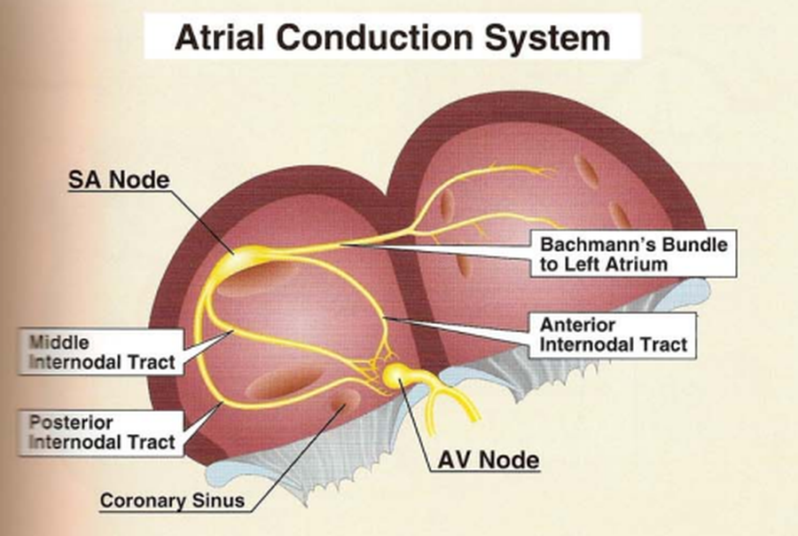
Four cardiac cell properties. Automaticity: producing its own impulse. Excitability: responding to an impulse or stimulus. Contractility: contracting. Conductivity: conducting the impulse from myocyte to myocyte. Spontaneous firing of the lower cells is prevented by the natural hierarchy of pacemaker function, so the fastest pacemaker, the sinoatrial node, normally sets the rate.
| Action potential phase | What happens |
|---|---|
| 4 — rest (diastole) | More potassium inside, sodium and calcium outside; the inside sits at −90 millivolts and the cell is ready to respond. |
| 0 — upstroke (depolarization) | Fast sodium channels open and sodium rushes in, making the inside positive. |
| 1 — early repolarization, “the notch” | Sodium channels close and potassium channels reopen; a slight negative shift. |
| 2 — plateau | Calcium enters the cell and causes contraction; the voltage holds level while potassium moves the other way. |
| 3 — rapid repolarization | Calcium channels close, potassium channels stay open and potassium flows out of the cell, and the inside returns to −90 millivolts. |
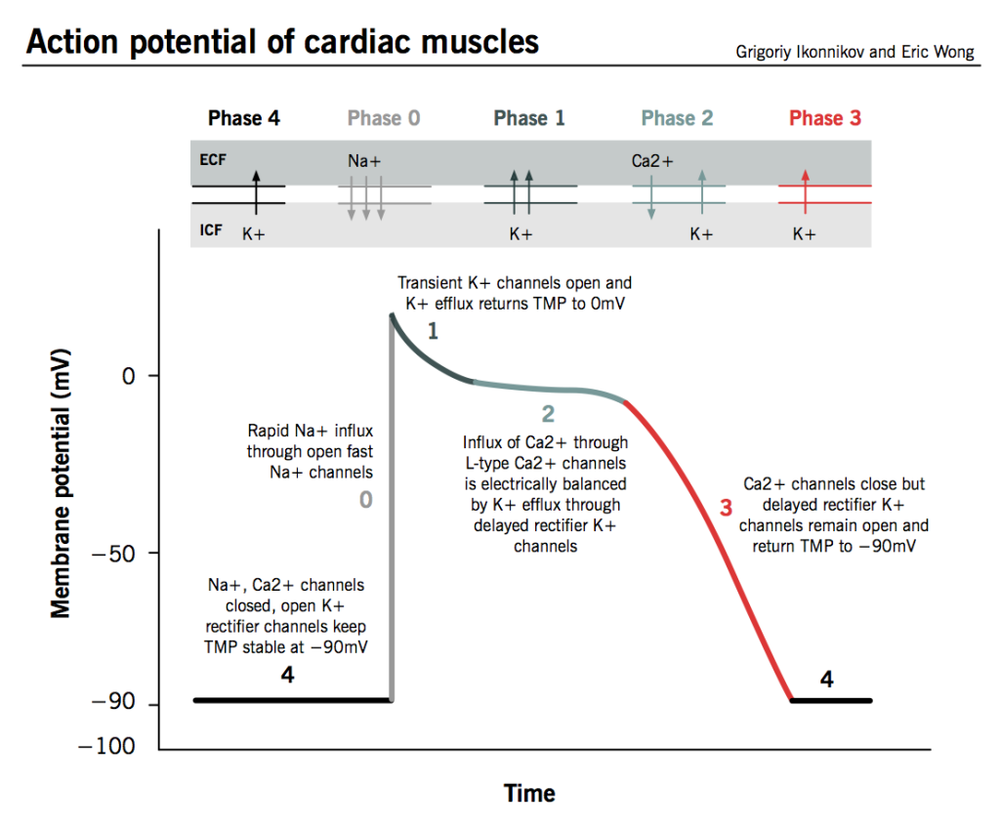
★ Absolute refractory period: a short time after an action potential (typically about 180 milliseconds) when the cell will not respond to another stimulus. Relative refractory period: during repolarization, when the cell will respond to a second stimulus but is very fragile. The peak of the T wave divides the two.
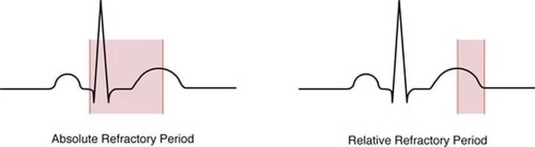
The heart’s vector. The heart sits in the mediastinum; the true pathway of conduction runs left and down, toward the left foot, and a shift outside the normal range is abnormal. (The deck says it points toward the front of the body; the normal vector points left, down and slightly backward, not forward.) Lead II has a perfect view of that vector, which is why it is the lead used for rhythm interpretation.
Where the slide text and the truth differ. Slides 20–22 say potassium moves into the cell in phases 1, 2 and 3. Repolarization is potassium leaving the cell (an outward positive current makes the inside negative again), and the deck’s own figure on slide 17 shows exactly that efflux. The quizzes key the efflux.
11.2 · Objective b — Lead placement
| Leads | How they are made |
|---|---|
| I, II, III — limb, bipolar | Einthoven’s triangle across both shoulders and the left leg; each needs a physical positive and negative pole. Lead I: positive left shoulder, negative right shoulder. Lead II: positive left foot, negative right shoulder. Lead III: positive left foot, negative left shoulder. Each positive lead is a camera. |
| aVR, aVL, aVF (augmented vector right, left, foot) — unipolar | Amplified and created by the machine from one physical lead and a theoretical negative pole in the center of the heart, the central terminal. (Slide 64 calls it Wilson’s terminal; strictly, Wilson’s central terminal is the chest leads’ reference, and the augmented leads use the average of the other two limb electrodes.) |
| The six limb leads together | I, II, III and the augmented leads form the first six leads of the 12-lead tracing and are used to determine the axis. |
| V1–V6 — precordial (chest), unipolar | Use the central terminal as the negative pole; very specific placement; give a horizontal view of the heart. |

| Chest lead | Placement |
|---|---|
| V1 | Fourth intercostal space, just right of the sternum |
| V2 | Fourth intercostal space, just left of the sternum |
| V3 | Directly between V2 and V4 |
| V4 | Fifth intercostal space at the midclavicular line |
| V5 | Level with V4 at the left anterior axillary line |
| V6 | Level with V5 at the midaxillary line |
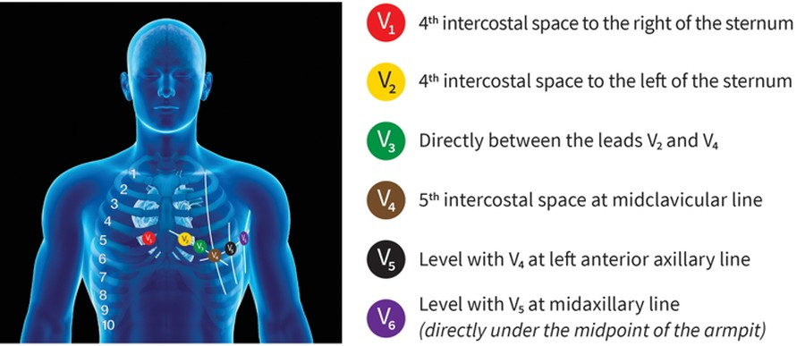
| Leads (contiguous groups) | Look at |
|---|---|
| V1, V2 | Septal wall |
| V3, V4 | Anterior wall of the left ventricle |
| I, aVL (augmented vector left), V5, V6 | Lateral wall of the left ventricle |
| II, III, aVF (augmented vector foot) | Inferior wall |
Contiguous leads are two or more leads that look at the same area of the heart: V1–V4; II, III and aVF; I, aVL, V5 and V6. aVR (augmented vector right) has clinical significance but is not usually used in basic 12-lead interpretation.
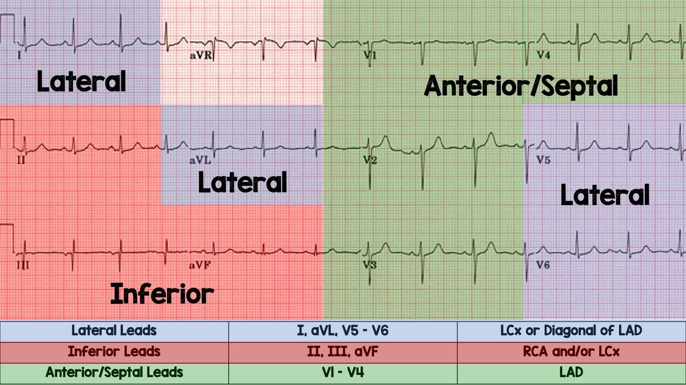
Also tested
- Lead II for rhythm interpretation. Lead II has a perfect view of the heart's vector, which is why it is the lead used for rhythm interpretation.
11.3 · Objective c — Determining rate, rhythm, PR, QRS, QT and QTc
The paper. Printed at 25 millimeters per second. Each small box is 1 millimeter tall and 0.04 seconds wide; each large box is five small boxes, 5 millimeters tall and 0.2 seconds wide. Left to right is time; up and down is voltage. Standard calibration is one large box (0.2 seconds) wide and two large boxes (10 millimeters) tall.
| Component | Represents | Normal |
|---|---|---|
| Baseline (isoelectric line) | No electrical activity; all measurements start here | — |
| P wave | Atrial depolarization, whatever its morphology | Round and upright in lead II, 2.5 millimeters or less tall, under 0.12 seconds |
| PR interval | Onset of P to start of QRS: the impulse reaching the atrioventricular node, the His bundle, the bundle branches and the Purkinje network (“the busiest time in the cardiac cycle”) | ★ 0.12–0.20 seconds (3–5 small boxes), constant across the strip |
| QRS complex | Ventricular depolarization; called a complex because it combines the Q, R and S waves (not every rhythm has all three) | ★ Under 0.12 seconds, narrow with sharp points; 0.12 seconds or more means abnormal conduction through the ventricles |
| Q wave | First negative deflection after the PR: septal depolarization, away from lead II | Under 0.04 seconds, low amplitude, not always visible |
| R wave | First positive deflection: ventricular depolarization moving toward lead II (the deck: the anterior left ventricle; see the note below) | — |
| S wave | First negative deflection after the R, moving away from lead II (the deck: the lateral left ventricle) | Must go below baseline to be a true S wave; otherwise an S wave pattern |
| J point | Where the QRS ends and the ST segment begins | At baseline, 1 millimeter variance allowed |
| ST segment | Between ventricular depolarization and repolarization; the ventricles hold their contraction to empty | At baseline |
| T wave | Ventricular repolarization | Asymmetric: slow upstroke, sharp downstroke; its peak divides the refractory periods |
| QT interval | All ventricular activity in one cycle: start of QRS to end of T | 350–450 milliseconds in males, 360–460 in females |
| TP segment | The resting state: end of T to the next P | The best place to judge the isoelectric line (the PR segment is not, because the impulse is still crossing the node) |
| R to R and P to P intervals | Distance between consecutive R waves, and consecutive P waves | Used for rate, regularity and heart blocks |
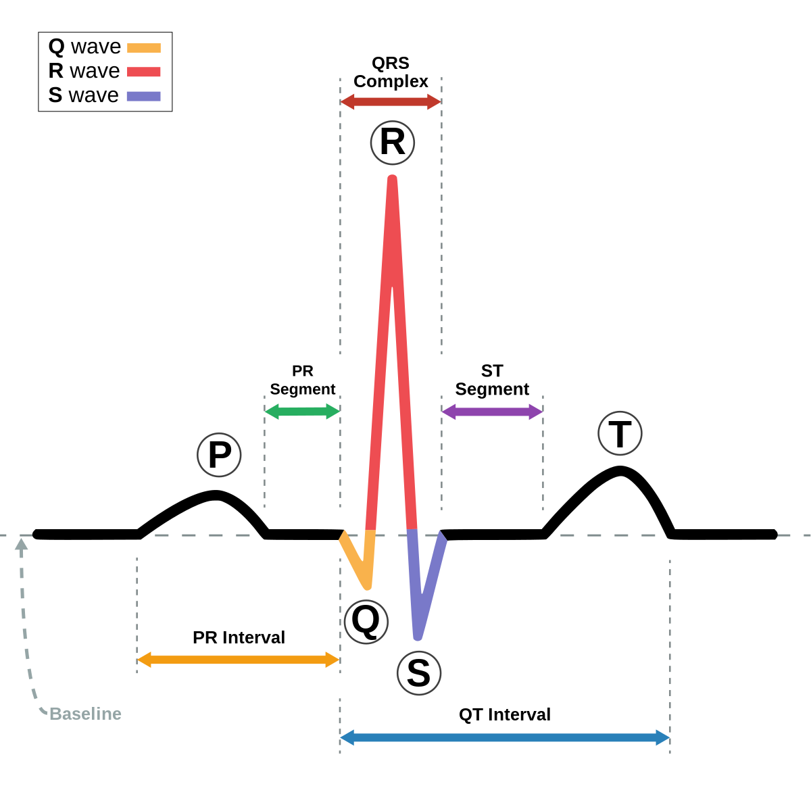
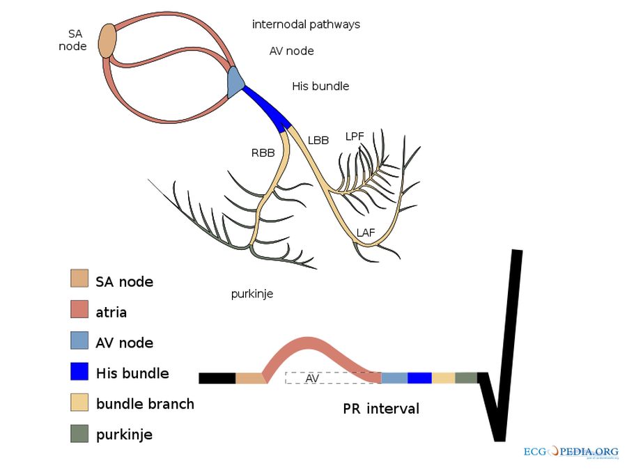
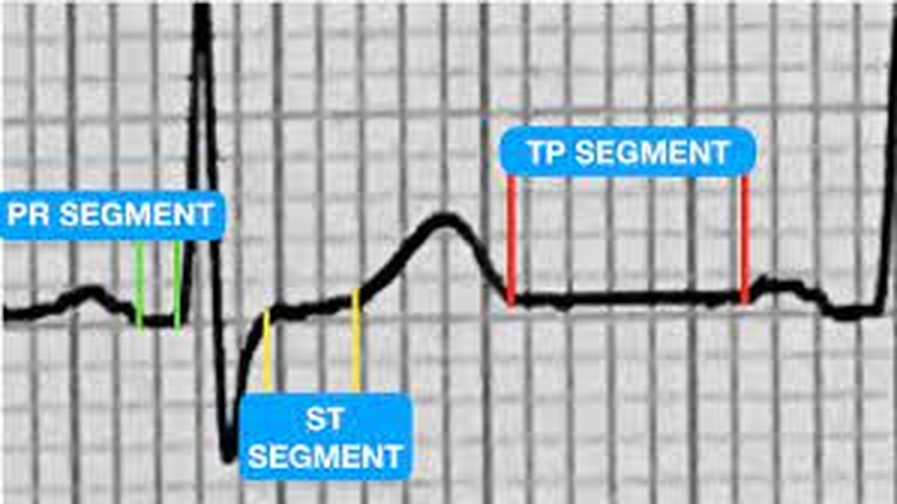
| Rate method | How | When |
|---|---|---|
| ★ Six-second method | On a six-second strip (two three-second markers, or 30 large boxes), count QRS complexes × 10 for the ventricular rate; count P waves × 10 for the atrial rate. | The most commonly used; works on irregular rhythms because it counts every beat. |
| Count-down method | From an R wave on a heavy line, count the following heavy lines: 300, 150, 100, 75, 60, 50. | Unreliable below 50 (and on irregular rhythms). |
| 300 method | 300 ÷ large boxes between consecutive R waves. | Regular rhythms. |
| 1500 method | 1500 ÷ small boxes between consecutive R waves. | The most accurate. |
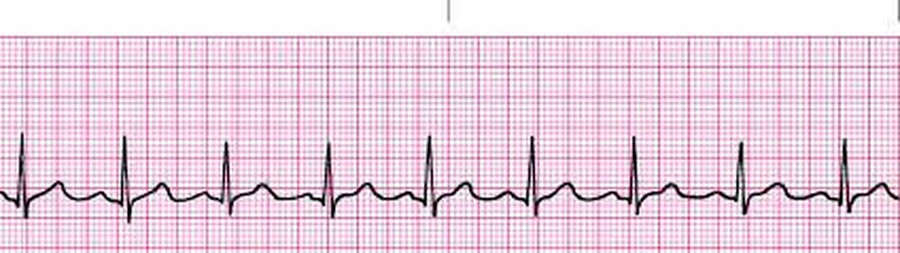
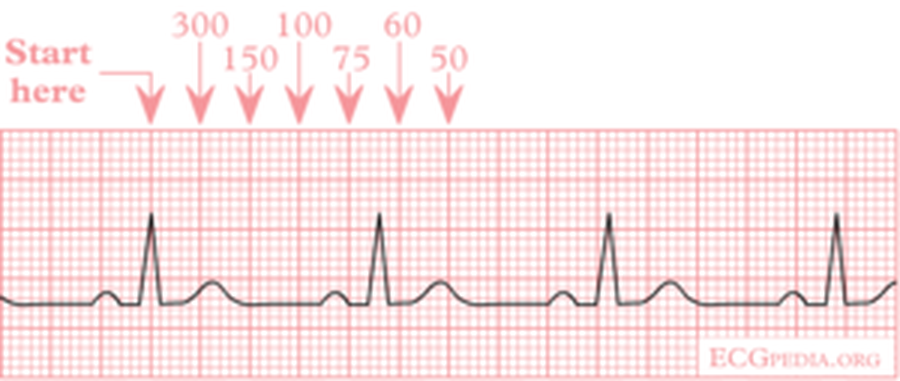
Rhythm (regularity). Compare consecutive R to R intervals. Most irregular rhythms are obvious at a glance; if unsure, use calipers (or a marked sheet of paper).
QTc. This deck has no slide on the QTc interval. It is the QT corrected for heart rate, covered in Lecture 7 (Exam 2 guide, section 7.7): the same normal values as the QT, borderline above 450 (460 in women) to 500 milliseconds, and high-risk above 500 milliseconds.
Slide 26 says a small box is “0.04ms” in duration. It is 0.04 seconds (40 milliseconds); five of them make the 0.2-second large box on the same slide.
Slides 33 and 34 tie the R wave to the anterior left ventricle and the S wave to its lateral wall. Standard teaching describes the R wave as depolarization of the main mass of the ventricles and the S wave as the last, basal parts to depolarize, not as single walls. Both agree on the direction (toward lead II draws an upright wave, away from it a negative one), and that is all the quizzes ask.
Also tested
- Regular or irregular. When the same distance separates every pair of consecutive R waves, the rhythm is regular; when the R to R intervals differ from beat to beat, the rhythm is irregular.
- The six-second method, worked. Fourteen QRS complexes in six seconds, multiplied by ten, gives a ventricular rate of 140 per minute.
- The 300 method, worked. Divide 300 by the large boxes between consecutive R waves: 300 divided by four is 75 per minute, and 300 divided by six large boxes is 50 per minute, below 60 and so a bradycardia.
11.4 · Objective d — The systematic approach
The P wave questions: Are they all the same morphology? Is there one before each QRS? Are they married to the QRS complexes (is each P wave causing its QRS)? Are they normal (round, upright in lead II, 2.5 millimeters or less, under 0.12 seconds)? Is the PR interval constant across the strip? Atrioventricular nodal blocks, accessory pathways and alternate pacemaker sites can put the PR outside its normal range.
★ A P wave married to every QRS means the rhythm is atrial in origin, whatever the QRS looks like; identical upright P waves, all of one shape, point to the sinoatrial node, while differing shapes point to other atrial sites. A P wave that only sits in front of a QRS by chance, as in complete heart block, does not count, and an inverted P wave just before the QRS is junctional. If you see QRS complexes with no P waves, the atria are not producing normal P waves: the impulse may have started below the atria, as in a junctional or ventricular rhythm, or the atria may be firing chaotically, as in atrial fibrillation.
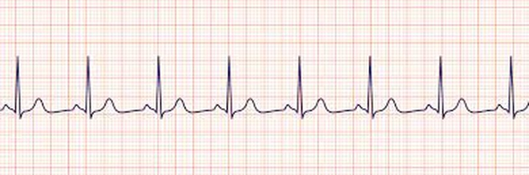
11.5 · Objective e — Normal sinus rhythm
| Normal sinus rhythm | |
|---|---|
| Rate | 60–100 per minute |
| Regularity | Regular |
| P waves | Normal, present, married to the QRS complexes |
| PR interval | Normal, 0.12–0.20 seconds, constant |
| QRS | Narrow |
The worked strip on slides 73–74 runs at 75–80 per minute: regular, P waves present and married, normal PR, narrow QRS.
11.6 · Objective f — Sinus bradycardia, sinus tachycardia and sinus arrhythmia
| Sinus bradycardia | Sinus tachycardia | Sinus arrhythmia | |
|---|---|---|---|
| Rate | Under 60 | Over 100 | 60–100 |
| Regularity | Regular | Regular | Irregular |
| P waves | Normal, present, married to the QRS complexes | ||
| PR interval | Normal, 0.12–0.20 seconds | ||
| QRS | Narrow or wide | Narrow or wide | Narrow or wide (most often narrow) |
What makes each of these sinus is the P waves: present, normal and married to the QRS. The QRS can be wide if ventricular conduction is abnormal without changing the name.
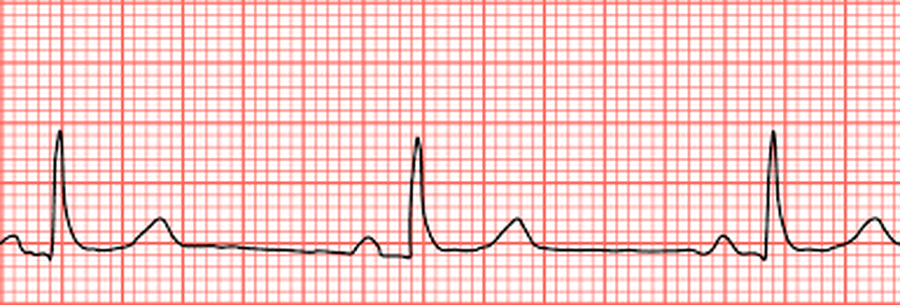
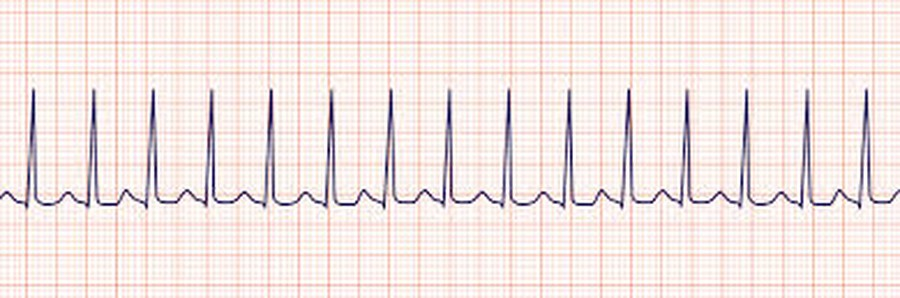
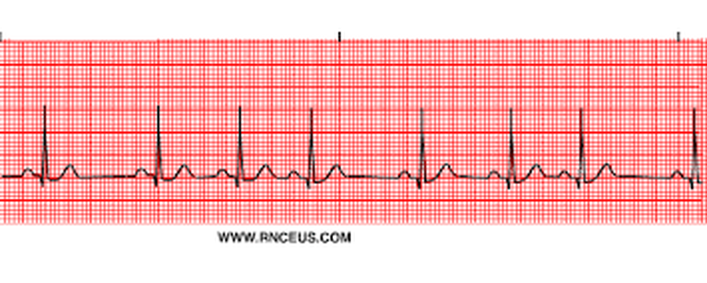
Also tested
- Only the rate differs. Normal sinus rhythm, sinus bradycardia and sinus tachycardia are all regular with normal P waves married to the QRS and a normal PR; only the ventricular rate (under 60, 60 to 100, over 100) differs.
- Sinus tachycardia at 190. The rate does not determine the rhythm: normal P waves married to every QRS make it sinus, so an upright P wave before every QRS is sinus tachycardia, even at 190.
11.7 · Objective g — Interpreting sinus arrhythmia, sinus block and sick sinus syndrome
Sinus arrhythmia (respiratory sinus arrhythmia) is a benign variation in the intervals between heartbeats, most commonly seen in children. The rate rises on inspiration and falls on exhalation; you can watch it follow the patient’s breathing.
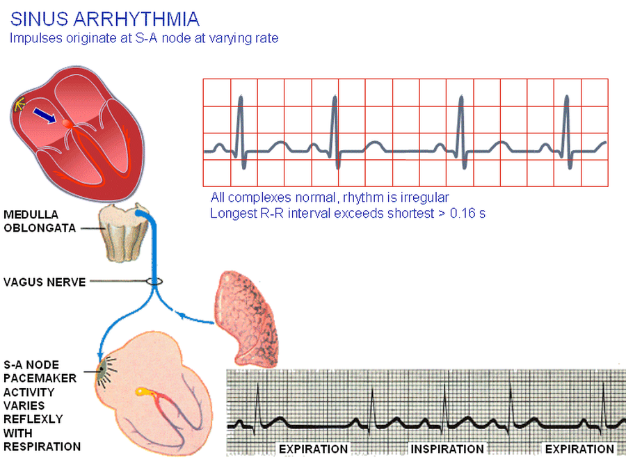
Sinus exit block (sinus block): the sinus node fires as normal, but its impulses are blocked, so one or more whole cardiac cycles are absent (no P wave, no QRS, no T wave). Because the node never stopped, the P to P intervals still march out once activity resumes: the gap is an exact multiple of the normal cycle.
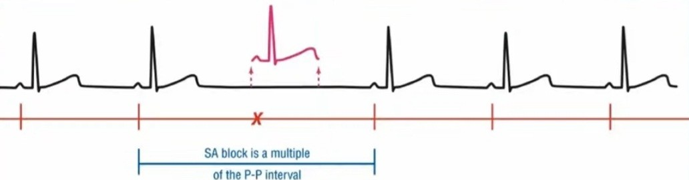
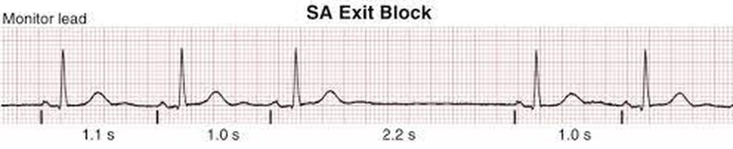
★ Sick sinus syndrome: sinus node problems such as sinus exit block, sinus pause and sinus arrest, often more than one in the same patient, even on the same strip. The deck calls it rare; in practice it is mostly a disease of older adults.
11.8 · Objective h — The sinus rhythms compared
| Rhythm | Rate | Regular? | The deciding feature |
|---|---|---|---|
| Normal sinus rhythm | 60–100 | Yes | All criteria normal |
| Sinus bradycardia | Under 60 | Yes | Rate only |
| Sinus tachycardia | Over 100 | Yes | Rate only |
| Sinus arrhythmia | 60–100 | No | R to R varies with breathing; no beats missing |
| Sinus exit block | Variable (typically under 150) | No | Whole cycles missing; P to P marches out |
| Sinus pause | Variable | No | Node stops and restarts; resets, P to P does not march out |
| Sinus arrest | Variable | No | Like a pause, but at least three cycles missed |
| Sick sinus syndrome | Variable | No | Sinus node problems such as exit block, pause and arrest, often more than one in one patient |
In exit block, pause and arrest the P waves, when present, are normal and married to the QRS, and the PR is normal; the deck’s criteria table for all three is the same (slides 86, 92 and 96).
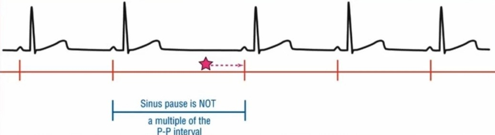
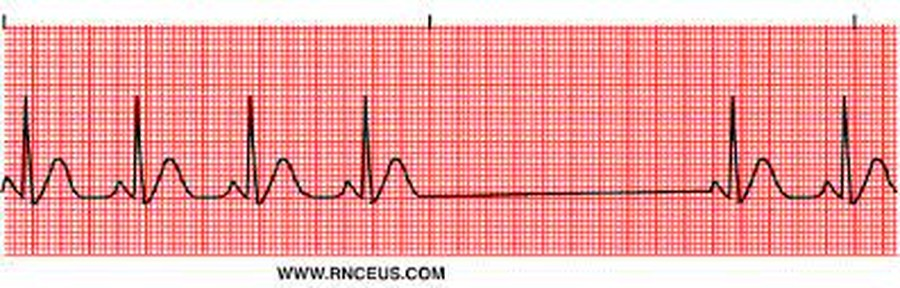
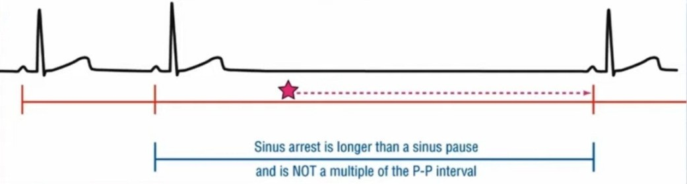
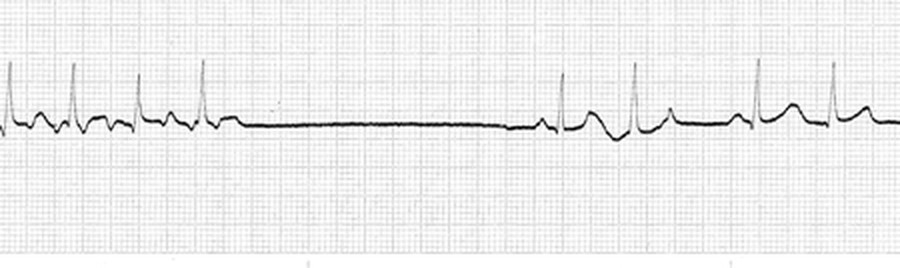
Two recording slips, keyed to the deck. In passing the lecturer said sinus arrest “picks back up at the same rate that it started at”; the deck (slide 95) and his own answer to a student at the end of the clip say the node resets, so the beats after an arrest do not march out. He also said sinus arrhythmia is seen in kids “and elderly”; the deck says most commonly in children, which is what the quizzes key. The deck’s line of three missed cycles for sinus arrest is this course’s dividing line; other references draw it by the length of the pause instead.
11.9 · Objective i — Anatomy and physiology of sinus node dysfunction
- The node. The sinoatrial node, in the upper right atrial wall below the superior vena cava, fires at 60–100 per minute and keeps the lower pacemakers quiet through the pacemaker hierarchy; when it fails, the atrioventricular node (40–60) and then the Purkinje network (20–40) take over.
- Exit block is a conduction problem: the node fires on time but the impulse is blocked from leaving it, so the timing is preserved and the beats march out.
- Pause and arrest are firing problems: the node stops and starts again, the cycle resets, and the beats do not march out; at least three missed cycles is arrest.
- Sick sinus syndrome is the umbrella for sinus node problems like these, often more than one in the same patient.
- Sinus arrhythmia is physiology, not dysfunction: on inspiration intrathoracic pressure falls, arterial pressure falls, the baroreceptors respond, vagal tone is suppressed and the heart rate rises; on exhalation the opposite happens.
12 · Ectopy, Escape Rhythms & Supraventricular Dysrhythmias
Scott Mathis, EMS (emergency medical services) educator, First Response Training Group · 5 October 2026
Instructional Objectives
Topic Outline 12: Ectopy, Escape Rhythms, and Supraventricular Dysrhythmias
- Recognize atrial, junctional, and ventricular premature beats.
- Compare and contrast ECG findings associated with atrial, junctional, and ventricular premature beats: i. Atrial premature beats · ii. Junctional premature beats · iii. Ventricular premature beats
- Recognize atrial, junctional, and ventricular escape rhythms.
- Recognize ECG findings associated with dysrhythmias: i. Junctional rhythm · ii. Accelerated junctional rhythm · iii. Idioventricular rhythm
- Compare and contrast junctional and idioventricular rhythms.
- Recognize common supraventricular dysrhythmias: i. Atrial tachycardia · ii. Supraventricular tachycardia (SVT) · iii. Atrial flutter · iv. Atrial fibrillation
- Compare and contrast ECG findings associated with supraventricular dysrhythmias: i. Atrial flutter · ii. Atrial fibrillation · iii. SVT · iv. Atrial tachycardia
- Discuss the related anatomy and physiology of supraventricular arrhythmias.
| He said | So |
|---|---|
| Atrial flutter’s sawtooth: “This is the only rhythm that will have this pattern. If you see this on a test … it’s a flutter.” (part 2, 15:00) | The sawtooth is pathognomonic. Then document the ratio (12.6). |
| “If you ever hear the phrase irregularly irregular, they’re talking about atrial fibrillation.” (part 2, 26:00) | No P waves, fibrillatory waves, irregularly irregular. |
| “No P wave, narrow QRS, regular R-R interval, and a rate above 150 is AVNRT (atrioventricular nodal reentrant tachycardia), or SVT (supraventricular tachycardia).” (part 2, 40:00) And: “the rate does not determine the rhythm.” (part 2, 13:00) | A sinus P wave before every QRS is sinus tachycardia even at 200; the reentry tachycardia has no visible P waves (12.7). |
| “A junctional rhythm by definition must be regular. So if it is irregular, find where it is irregular … that’s where your PJC (premature junctional complex) is going to be.” (part 3, 15:00) | Junctional rhythms are regular; an early beat interrupting one is a premature junctional complex (12.4). |
| “Anytime you see a wide QRS with a contralateral T wave, think ventricular.” (part 3, 27:00) | Wide plus opposite-direction T wave means a ventricular origin (12.2). |
| “If it’s one or the other, always go with the T wave.” (part 3, 1:00) | When a single wave between rapid QRS complexes could be a P or a T, call it a T wave and say no P waves are visible. |
| Not this week, said out loud: “we’re not gonna get into treatment here. This is just solely about rhythm interpretation and diagnosis” (part 1, 0:00); the three types of atrial fibrillation: “You don’t have to get too much into the weeds of this right now” (part 2, 25:00). | Recognize and compare; management comes later. |
The one-line frame for the whole lecture. Early or late, narrow or wide, and what the P wave looks like. A premature beat comes early; an escape beat comes late after a pause. A narrow QRS means the impulse used the normal pathway from above the ventricles; a wide QRS with an opposite T wave means it started in the ventricles. The P wave says where above the ventricles: a new-shaped upright P is atrial, an inverted, hidden or trailing P is junctional, a sawtooth is flutter, chaos is fibrillation.
12.1 · Objective a — Recognizing premature beats
Premature atrial complex. An early ectopic impulse from outside the sinoatrial node, within the atria, from one or several sites, usually from increased automaticity. It arrives early with a P wave of different morphology and (usually) a narrow QRS; the rest of the rhythm is normal.
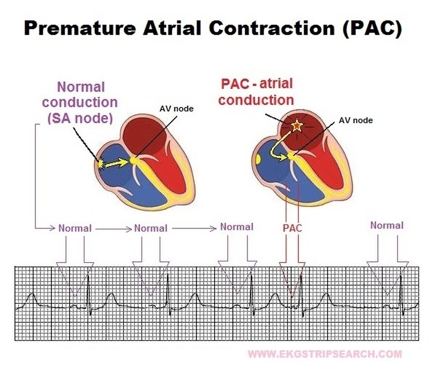
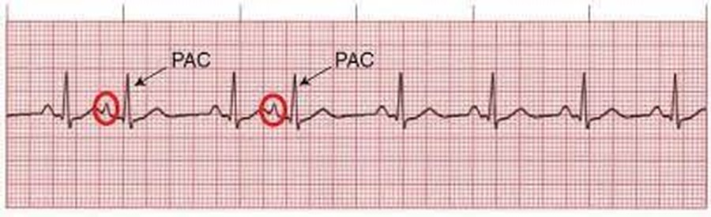
Premature junctional complex. Comes early, before the next expected R wave, from increased automaticity of the atrioventricular junction. Its P wave is that of any junctional beat: none, inverted, or after the QRS. Isolated premature junctional complexes have no clinical significance.
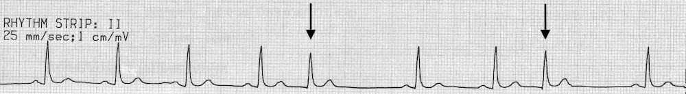
Premature ventricular complex. Comes early, before the next expected R wave. Ventricular beats are wide and abnormal-looking (QRS typically over 0.12 seconds), with no P wave and a T wave that goes the opposite direction (“contralateral”). Two in a row is a couplet, three a triplet; the same shape means one focus (unifocal), different shapes mean several foci (multifocal). Frequent, especially grouped, premature ventricular complexes can reduce cardiac output.
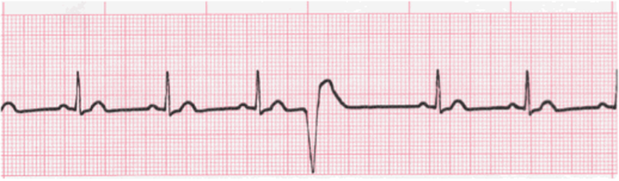
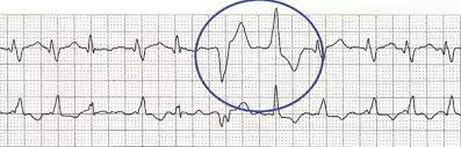
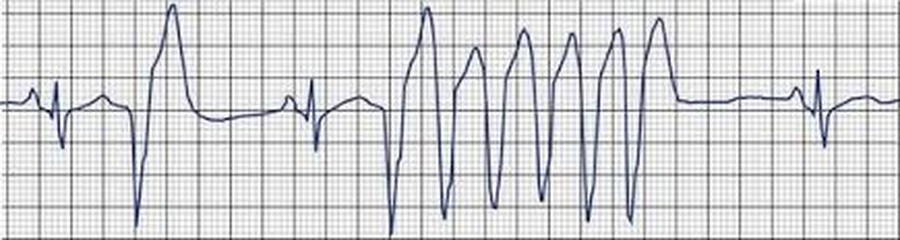
★ R on T. If the R wave of a premature ventricular complex lands on the T wave of the beat before it, in the relative refractory period, it can set off ventricular tachycardia or ventricular fibrillation.
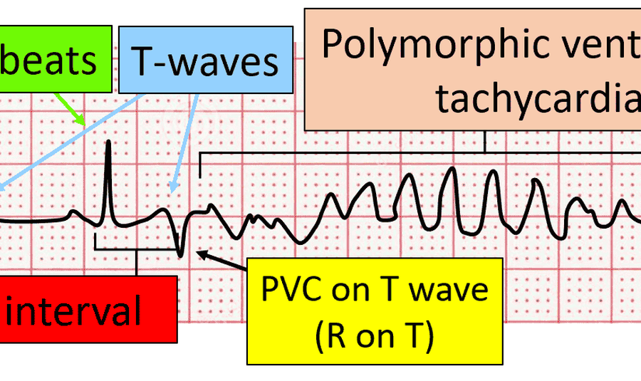
Patterns. Premature atrial, junctional and ventricular complexes can all recur in a pattern: every other beat is bigeminy, every third beat trigeminy, every fourth beat quadrigeminy.
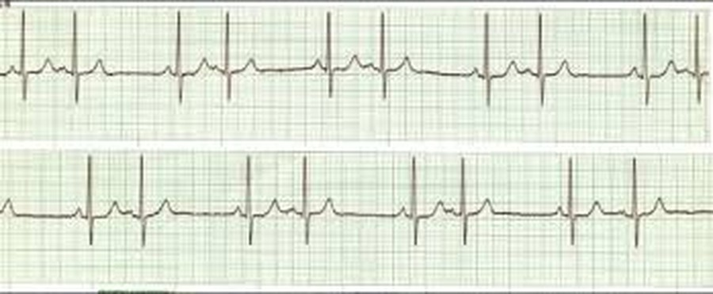
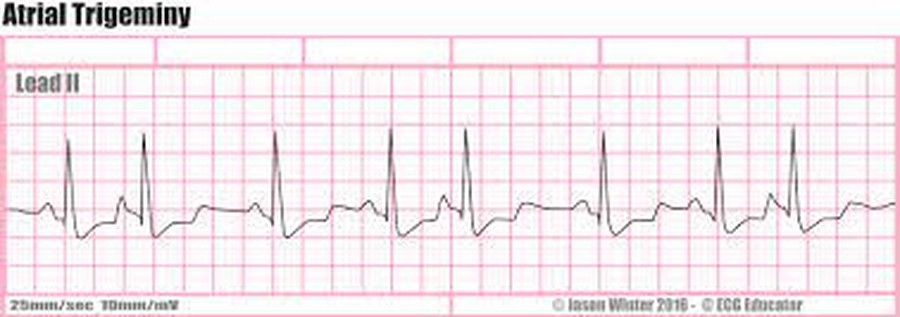
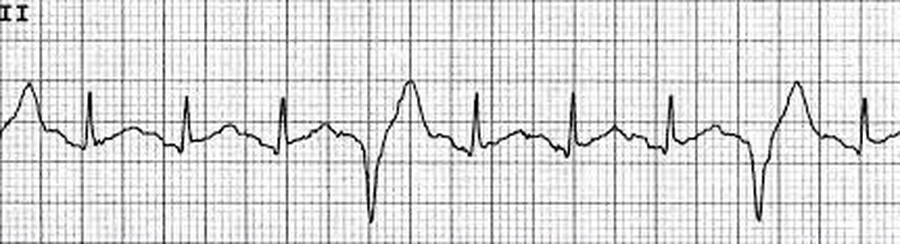
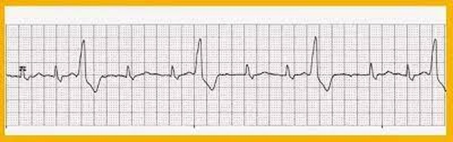
Also tested
- Trigeminy. Every third beat is a premature complex: two normal beats then an early one, repeating.
- Quadrigeminy. Every fourth beat is a premature complex: three normal beats then an early one (here ventricular).
- A run of consecutive wide beats. Three or more consecutive premature ventricular complexes at a fast rate are ventricular tachycardia; a brief run is nonsustained and needs evaluation.
12.2 · Objective b — The three premature beats compared
| Premature atrial | Premature junctional | Premature ventricular | |
|---|---|---|---|
| Origin | Atria, outside the sinoatrial node | Atrioventricular junction (most from the transition zone) | Ventricles |
| Timing | Early, before the next expected R wave | ||
| P wave | Present, different shape | None, inverted, or after the QRS | None |
| QRS | Usually narrow | Usually narrow | Wide, abnormal, typically over 0.12 seconds |
| T wave | Normal | Normal | Opposite the QRS |
| Patterns | Bigeminy, trigeminy, quadrigeminy for all three | ||
12.3 · Objective c — Escape beats and escape rhythms
An escape beat comes late, past the point where the next R wave was expected, because the pacemaker above it has failed or slowed.
| Escape | When | Looks like |
|---|---|---|
| Junctional escape beat | The sinoatrial node fails to fire or fires too slowly | A late narrow beat after a pause, with junctional P wave findings; the sinus node then resets |
| Junctional escape rhythm | Escape beats become the rhythm: the atrioventricular node takes over as the main pacemaker and suppresses the sinoatrial node | 40–60 per minute, regular, junctional P waves (12.4) |
| Ventricular escape complex | Both the sinoatrial and atrioventricular nodes fail to act as the pacemaker | A late wide beat past the expected R wave |
| Idioventricular rhythm | The Purkinje network takes over as the primary pacemaker | 20–40 per minute, regular, wide, no P waves (12.4) |
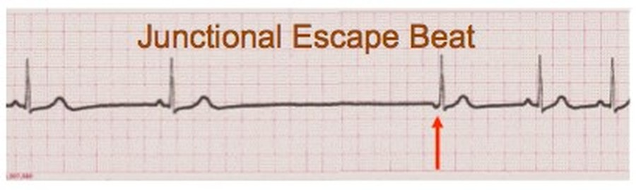
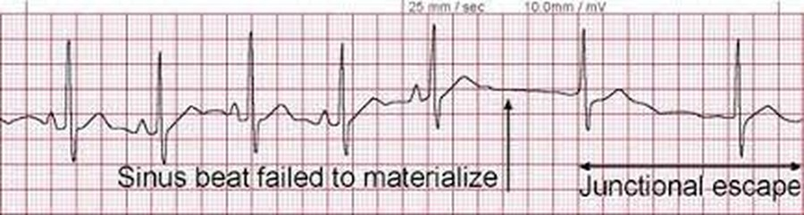
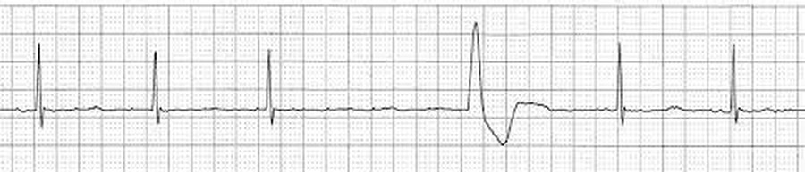
Atrial escape rhythms are named in the objective, but the deck has no slide on them: its atrial rhythms are all premature, tachycardic or fibrillating ones.
12.4 · Objective d — Junctional, accelerated junctional and idioventricular rhythms
Where the junctional P wave goes. A junctional impulse can travel up into the atria and down the His bundle at once, and its P wave depends on which arrives first:
- Atria first → an inverted P wave just before the QRS (the atria depolarize from the bottom up, away from positive lead II), with a short PR.
- At the same time, or the atria are never depolarized → no visible P wave (the QRS hides it).
- Ventricles first (an impulse from the trigger zone reaches the His bundle first, then climbs the slow compact zone) → the P wave after the QRS.
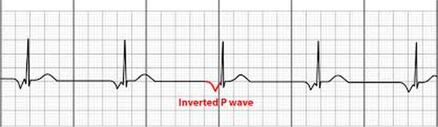
| Junctional escape rhythm | Accelerated junctional rhythm | Junctional tachycardia | |
|---|---|---|---|
| Rate | 40–60 | 60–100 | Over 100 |
| Regularity | Regular | ||
| P waves | Absent, or inverted, either just before the QRS or after it | ||
| PR interval | If present, under 0.12 seconds | ||
| QRS | Narrow or wide (most commonly narrow) | ||
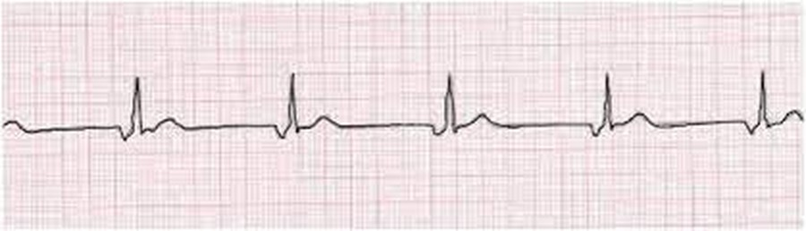
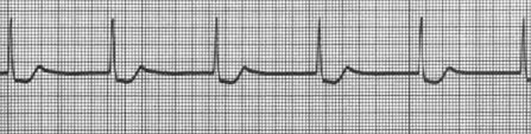
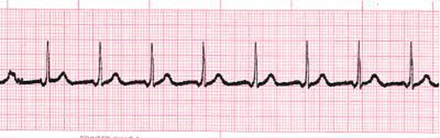
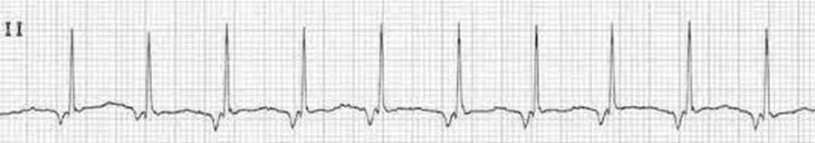
| Idioventricular rhythm | Accelerated idioventricular rhythm | |
|---|---|---|
| Rate | 20–40 | 40–100 |
| Regularity | Regular | |
| P waves / PR | None | |
| QRS | Wide, longer than 0.12 seconds | |
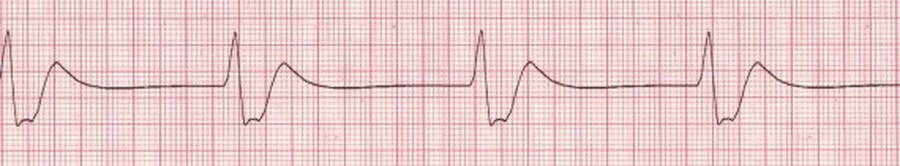
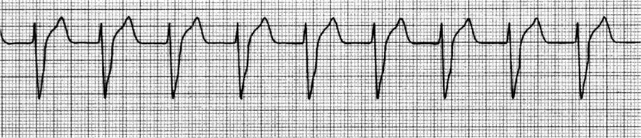
Slide 75 calls idioventricular rhythm “also known as agonal rhythm.” Agonal rhythm is the dying, very slow end of it (the lecturer: “especially if you’re below 20 or so”), and he treats it as a sign of imminent arrest; idioventricular rhythm at 20–40 is not automatically agonal. No question keys the two as synonyms.
12.5 · Objective e — Junctional versus idioventricular rhythms
| Junctional | Idioventricular | |
|---|---|---|
| Pacemaker | Atrioventricular node (compact zone) | Purkinje network |
| Intrinsic rate | 40–60 (accelerated 60–100, tachycardia over 100) | 20–40 (accelerated 40–100) |
| P waves | Absent, or inverted before or after the QRS | None |
| QRS | Most commonly narrow (it still travels the normal pathway) | Wide, over 0.12 seconds |
| Regularity | Both regular | |
12.6 · Objective f — Recognizing the supraventricular dysrhythmias
Atrial tachycardia in this deck is multifocal atrial tachycardia, presented with its slower twin, the wandering atrial pacemaker:
| Wandering atrial pacemaker | Multifocal atrial tachycardia | |
|---|---|---|
| Rate | Under 100 | Over 100 |
| Regularity | Irregular | |
| P waves | At least three different morphologies, still married to the QRS | |
| PR interval | Variable | |
| QRS | Narrow or wide | |
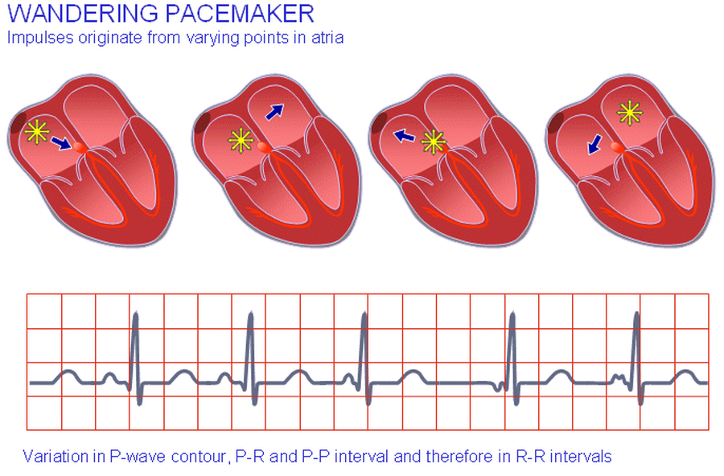
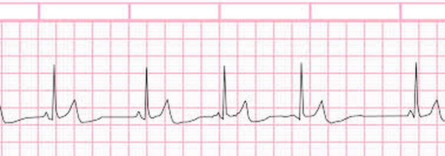
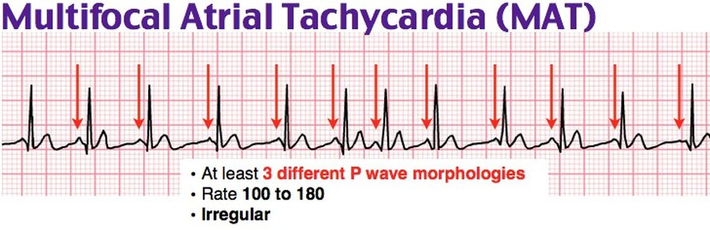
Atrial flutter. A rapid atrial rate from a reentry circuit, most often in the right atrium, set up by chamber enlargement or scarred or ischemic tissue. On paper it makes a ★ sawtooth pattern that is pathognomonic. Flutter waves (F waves) replace P waves; there is no PR interval; the QRS is narrow or wide. The atrial rate is about 300 (the deck’s range is 200–350); the ventricular rate depends on how many flutter waves pass for each QRS. Document the ratio: two flutter waves per QRS is atrial flutter with 2:1 ratio, three is 3:1. If the ratio changes, the rhythm is irregular and is documented as atrial flutter with variable conduction. To count, draw a line through the flutter-wave peaks and count the troughs to the next QRS; a notch at the end of the QRS counts as a flutter wave too.
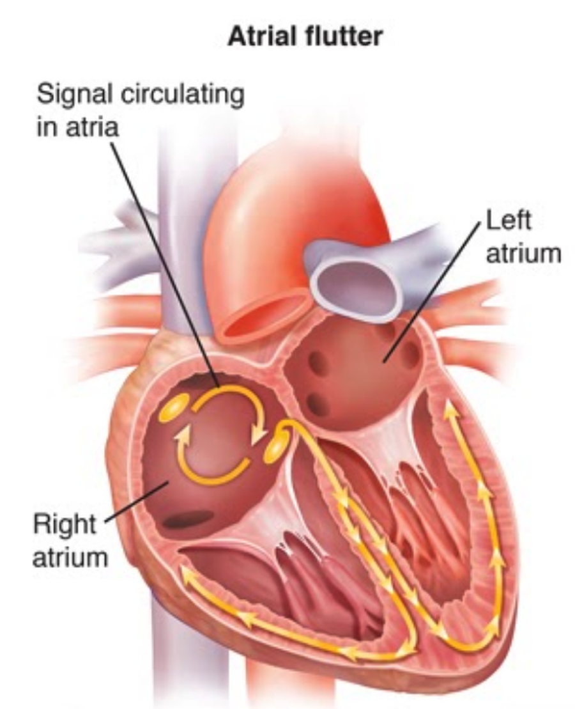
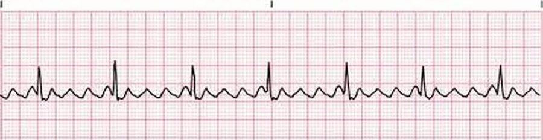
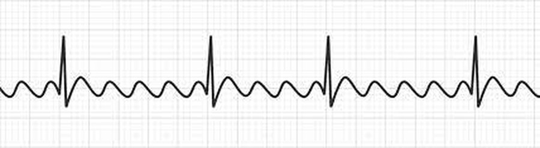
Atrial fibrillation. The most treated cardiac arrhythmia: irregular electrical activity of multiple atrial sites that suppresses the sinoatrial node. The atria quiver instead of contracting, so the atrial kick is lost. No P waves, only fibrillatory (f) waves; the atrial rate is indeterminate and the ventricular rate variable; ★ irregularly irregular; no PR interval; QRS narrow or wide. Three types: paroxysmal (converts without intervention), persistent (lasts more than 7 days, or needs a drug or electrical cardioversion to stop), permanent (ongoing, and no further attempt is made to restore normal rhythm).
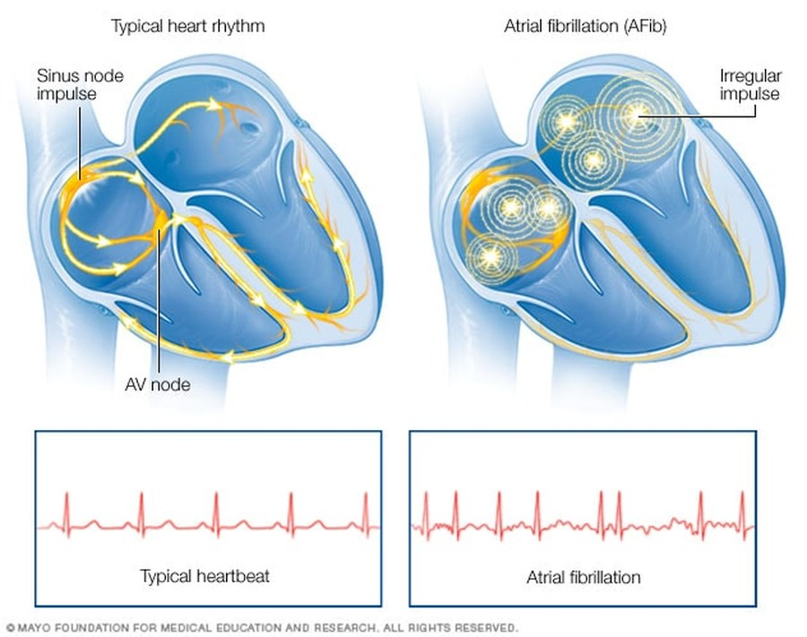
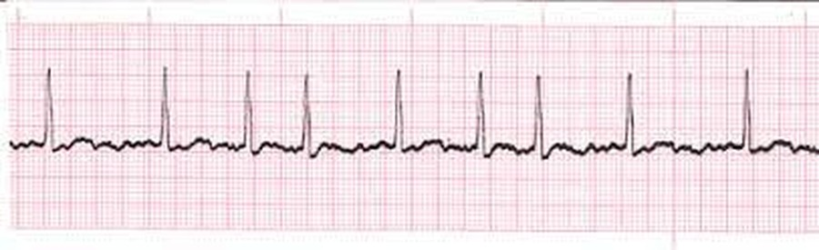
Atrioventricular nodal reentrant tachycardia, the most common kind of paroxysmal supraventricular tachycardia (and often simply called supraventricular tachycardia): a regular, narrow-complex tachycardia from a reentry circuit over the slow and fast pathways, usually set off by an ectopic beat, typically a premature atrial complex near the fast (superior anterior) or slow (inferior posterior) tract. ★ Rate 150–300, regular, P waves not visible (or retrograde), no PR (or an RP interval), narrow QRS.
- Typical (most common): the circuit runs counterclockwise down the slow tract and up the fast tract; no P waves, or retrograde P waves buried at the end of the QRS (pseudo S waves).
- Atypical (rare): down the fast tract and up the slow; retrograde P waves are clearly visible, with an RP interval rather than a PR.
Also tested
- Counting flutter waves. Draw a line through the peaks of the flutter waves and count the troughs until the next QRS complex; that number sets the ratio.
12.7 · Objective g — The supraventricular dysrhythmias compared
| Atrial flutter | Atrial fibrillation | Atrioventricular nodal reentry (often called supraventricular tachycardia) | Atrial tachycardia (multifocal) | |
|---|---|---|---|---|
| Atrial activity | Sawtooth flutter waves, about 300 | Fibrillatory waves, rate indeterminate | Not visible, or retrograde | P waves of three or more shapes |
| Ventricular rate | Set by the ratio | Variable | 150–300 | Over 100 |
| Regularity | Regular, or irregular with variable conduction | Irregularly irregular | Regular | Irregular |
| PR | None | None | None (or RP) | Variable |
| QRS | Narrow or wide | Narrow or wide | Narrow | Narrow or wide |
12.8 · Objective h — Anatomy and physiology of the supraventricular arrhythmias
- Premature atrial complexes: increased automaticity of an ectopic atrial site.
- Wandering pacemaker and multifocal atrial tachycardia: at least three atrial sites competing to be the pacemaker, so the P wave shape keeps changing.
- Atrial flutter: one reentry circuit, most often in the right atrium, in enlarged, scarred or ischemic tissue; the atrioventricular node lets only some flutter waves through, giving the ratio.
- Atrial fibrillation: many atrial sites firing chaotically, suppressing the sinus node; loss of the atrial kick (the 20–30 percent of ventricular filling that is not passive, Lecture 11).
- Atrioventricular nodal reentrant tachycardia: a reentry loop over a slow and a fast tract, started by a premature atrial complex; in the typical form down the slow tract and up the fast.
- The atrioventricular node’s three zones: the transition zone receives the sinus impulse and is very arrhythmogenic (most premature junctional complexes); the compact zone is the core that slows conduction to allow atrial contraction and ventricular filling, resembles the sinus node and can be the backup pacemaker; the trigger zone sends the signal down the His bundle.
Where the deck’s wording is loose. (1) Slide 5 lists “Multifocal atrial pacemaker (MAT)”; the rhythm is multifocal atrial tachycardia (slide 17 has it right). (2) Slide 5 also files atrioventricular nodal reentrant tachycardia under “atrial rhythms”; its circuit is nodal. (3) Slide 38 places the circuit “in between the internodal pathways of the sinus node and the AV (atrioventricular) node”; current teaching puts its slow and fast pathways in and around the atrioventricular node itself. The quizzes key only what both say: a reentry circuit over a slow and a fast pathway, started by an ectopic beat. (4) “Supraventricular” strictly means any rhythm from above the ventricles; the deck and the lecturer use supraventricular tachycardia for this one reentry rhythm, and so do the quizzes. (5) Slide 70 calls six premature ventricular complexes in a row “a run of V-tach” that requires intervention; the usual definition of ventricular tachycardia is three or more consecutive ventricular beats, so no question asks the number, and a brief (nonsustained) run calls for evaluation rather than automatic treatment. (6) Slide 27’s flutter atrial rate of 200–350 is wider than the classic 250–350; both worked strips sit at about 300. (7) Slide 38 says all cases of atrioventricular nodal reentrant tachycardia are triggered by an ectopic focus such as a premature atrial complex; a premature atrial complex is the usual trigger, but not the only one, so the quizzes say “usually”.
13 · Ventricular Dysrhythmias and Atrioventricular Blocks
Scott Mathis, EMS (emergency medical services) educator, First Response Training Group · 6 October 2026
Instructional Objectives
Topic Outline 13: Ventricular Dysrhythmias and Atrioventricular Blocks
- Recognize ECG findings associated with ventricular dysrhythmias: i. Ventricular tachycardia · ii. Ventricular fibrillation · iii. Torsades de Pointes · iv. Asystole
- Compare and contrast ECG findings associated with ventricular dysrhythmias: i. Ventricular tachycardia · ii. Ventricular fibrillation · iii. Torsades de Pointes
- Recognize ECG findings associated with atrioventricular blocks: i. First-degree AV block · ii. Second-degree AV block Type I · iii. Second-degree AV block Type II · iv. Third-degree AV block
- Compare and contrast ECG findings associated with atrioventricular blocks: i. First-degree AV block · ii. Second-degree AV block · iii. Third-degree AV block
- Discuss the related anatomy and physiology of AV nodal and infranodal conduction abnormalities.
- Correlate ECG findings with clinical implications of ventricular arrhythmias and AV blocks.
The one-line frame for the whole lecture. Two families of rhythm. The ventricular rhythms are about a ventricular focus taking over (ventricular tachycardia, torsades de pointes), chaos (ventricular fibrillation) or nothing at all (asystole), and whether the patient has a pulse. The atrioventricular blocks are about P waves that get through slowly (first-degree), get through until one does not (second-degree) or never get through (third-degree), and the PR interval is what tells them apart.
Numbers: rates and intervals here are the electrocardiographic criteria the lecture teaches. On the quizzes, any value in a question stem comes with its normal range: PR interval 0.12 to 0.20 seconds, QRS under 0.12 seconds, heart rate 60 to 100 per minute. Nothing is calculated.
| He said | So |
|---|---|
| “The only thing you need to know to diagnose a first-degree heart block is the PR interval duration.” [part 2, 1:23] At first glance it looks like sinus rhythm, “when in reality if you don’t look at the PR interval duration you may not notice.” [2:00] | First-degree block is a sinus rhythm with a PR beyond 0.2 seconds (13.4). Always measure the PR. |
| The two questions for every block: “Do I have more Ps than QRSs? … If I have more Ps than QRSs I know that I have a block.” Then “Is my PR interval going, going, gone? Is it staying the same or is it randomly changing? … I’m telling you, you just remember that.” [part 2, 12:01–12:31 and 24:14–24:39] | More P waves than QRS complexes suggests a block rather than proving one. Lengthening = second-degree type I; constant with dropped beats = type II; random = third-degree (13.5). This is his teaching shortcut; the deck states each piece separately. |
| Wenckebach is “going, going, gone”; “there has to be at least two complexes prior to the dropped beat … I have to have something to get longer from.” And “if you march out the P waves, all of the P waves are the same distance apart.” [part 2, 5:32–5:48 and 8:02–8:25] | The atria keep firing on time; the atrioventricular node is what falls behind (13.4, 13.6). |
| Type II is “less common, but more serious than a second degree type 1 … always a sign of underlying disease of the conduction system … damaged fibrotic tissue,” and “most of the time it is going to be below the AV [atrioventricular] node, somewhere in the His bundle.” [part 2, 9:51–11:00] | 13.4 and 13.6. He said “always”; it is almost always. Slide 35’s text has a slip (“first degree type I”); this is the reading he gave. |
| Third-degree: “This is divorce … they are completely disconnected.” [part 2, 18:47] And “don’t look at a third-degree heart block and always expect the ventricular complexes just to be super wide … the answer … is the PR interval.” [23:04–23:18] | The QRS is narrow or wide depending on where the escape comes from (13.4, 13.6). The unrelated P waves define it. |
| Polymorphic ventricular tachycardia: “the answer lies for us … within the QT interval. That’s how we’re going to … discern which one of those polymorphic V-tachs it is.” [part 1, 5:31–5:41] | Torsades de pointes is the polymorphic form tied to a prolonged QT interval (13.1, 13.7). |
| “A lot of people get confused between V-tach and V-fib. When you look back at V-tach … you can see how organized V-tach truly is … This is complete disorganization.” [part 1, 29:28–29:50] And “by definition, if the patient is in V-fib, they do not have a pulse.” [24:18] | Organized versus chaotic is the line between the two (13.2). |
| Pulseless electrical activity: a question on it “must write somewhere on this rhythm … no pulse. Otherwise, how else are you going to know that’s PEA [pulseless electrical activity]? That looks like normal sinus.” [part 1, 31:42–32:00] | The strip alone never makes the diagnosis; the missing pulse does (13.1). |
| Ventricular capture is known by three findings: “a pacer spike … married to every single QRS, the QRS wide, and then the T wave is contralateral.” And “when you see a wide … rhythm, always … look for pacer spikes.” [part 1, 39:26–39:45 and 40:46–40:59] | 13.3. |
Not examined from this lecture: the treatment asides (amiodarone, electricity first, the 150 per minute intervention threshold, atropine and anticholinergics, fluids, pressors and pacing, the demand pacemaker, the size button on the monitor, how long a resuscitation runs). They are not on the slides, so the quizzes do not ask them. He said nothing was off the test.
Where his time went (distinct minutes of speech, about 70 in all): ventricular tachycardia and torsades 23 (much of it treatment talk), the four blocks 25 (third-degree 8.5, type II 6.5, type I 5.5, first-degree 3), paced rhythms 8, ventricular fibrillation 7, pulseless electrical activity 3, asystole 1.5, ventricular standstill 1. The quizzes are weighted the same way, with paced rhythms capped because they are not a syllabus objective.
Where the slide, the recording and the truth differ. (1) Rate of ventricular tachycardia: the slides say 100 to 300 per minute; he added “if the rhythm is not above 120 beats per minute, do not consider it to be V-tach … technically 100 to 300 is true” [part 1, 6:03–7:23]. The quizzes key the slide’s range and never hinge on 100 to 120. (2) Slide 35 calls type II “more serious than first degree type I”; it means second-degree type I, as he read it. (3) Slide 35 calls type II an intranodal block “low in the AV node and the His bundle”; its own figure (slide 36), the syllabus objective (“infranodal”) and the recording put it below the atrioventricular node, which is what is taught here. (4) Slide 29 says Wenckebach is due to the “all or nothing property of the cardiac cell’s depolarization”. All-or-nothing applies to every action potential and does not explain a delay that grows beat by beat; the mechanism is progressive (decremental) slowing of conduction through the atrioventricular node until one impulse is not conducted, which is the slide’s own pattern of a lengthening PR. That is what the quizzes key. (5) He linked torsades to low magnesium and potassium and to drugs that prolong the QT interval, and gave atrial and ventricular rates of 60 to 100 and 20 to 40 for complete block; none of that is on the slides, so it is context, not quiz material.
13.1 · Objective a — Recognizing the ventricular dysrhythmias
| Rhythm | Rate | Regularity | P waves | PR | QRS |
|---|---|---|---|---|---|
| Ventricular tachycardia (monomorphic) | 100–300 per minute | Regular | None; if present, usually dissociated, not married to the QRS | Typically none | Wide |
| Polymorphic ventricular tachycardia (torsades de pointes when the QT interval is prolonged) | 100–300 per minute | Irregular | None | None | Wide, changing shape and amplitude |
| Ventricular fibrillation | 300–500 per minute | Irregular | None | None | Not measurable |
| Asystole | — | — | None | None | None: a flat line |
| Pulseless electrical activity | Any organized rhythm, even normal sinus, with no pulse | ||||
| Ventricular standstill | Obvious upright P waves march across the strip with no QRS complexes; no pulse | ||||
Also tested
- Ventricular tachycardia with a palpable pulse. Regular, wide, identical complexes at a fast rate with no P waves are ventricular tachycardia, even with a palpable pulse; one example runs at 140 per minute.
- Why the QRS is wide. The QRS in ventricular tachycardia is wide, because the impulse starts in the ventricle and spreads outside the normal conduction pathway.
Ventricular tachycardia
Ventricular tachycardia (the deck also calls it V-tach) refers to any tachycardia which originates in the ventricles. It can present with or without a pulse, and it can be regular and monomorphic (every complex the same shape) or irregular and polymorphic. On the strip: rate 100 to 300 per minute, regular, wide QRS complexes, no P waves (any that are present are usually dissociated, not married to the QRS) and typically no PR interval. The deck’s two worked strips run at 140 and 190 per minute.
Polymorphic ventricular tachycardia: torsades de pointes
Polymorphic ventricular tachycardia is an irregular ventricular tachycardia at 100 to 300 per minute. The form that comes with a prolonged QT (Q-to-T) interval is called torsades de pointes, French for twisting of the points, from its unique look and shape: the complexes swing from positive to negative around the baseline. ★ It is usually a consequence of a prolonged QT interval; polymorphic ventricular tachycardia with a normal QT interval, for example from ischemia, is not torsades.
Ventricular fibrillation
Ventricular fibrillation is asynchronous, chaotic firing of multiple foci within the ventricles. The heart muscle cannot contract, so it quivers; with no ventricular contraction there is no cardiac output and no pulse. There are no measurable P waves, QRS complexes or T waves: rate 300 to 500 per minute, irregular, no PR, QRS not measurable. Low-amplitude fibrillation is called fine; large chaotic waves are coarse.
Asystole
Asystole is a lack of electrical activity with no pulse, also known as flat line. Untreated, ventricular fibrillation ends in it.
Pulseless electrical activity
Pulseless electrical activity is a condition in which there is organized electrical activity on the monitor but no palpable pulse because the heart is not pumping effectively. The deck describes it as no mechanical activity; ultrasound can show weak contractions. ★ It can look like any organized rhythm, even normal sinus; if there is no pulse, it is pulseless electrical activity. So the strip alone cannot make the diagnosis: the absence of a pulse does.
Ventricular standstill
During ventricular standstill there are atrial contractions but no ventricular contractions: obvious, upright P waves march out across the strip with no QRS complexes, no detectable pulse and no cardiac output. A patient can go through episodes of paroxysmal ventricular standstill, conducted beats and standstill alternating.
13.2 · Objective b — Ventricular tachycardia, ventricular fibrillation and torsades compared
| Ventricular tachycardia | Torsades de pointes | Ventricular fibrillation | |
|---|---|---|---|
| Mechanism | A tachycardia originating in the ventricles | The polymorphic form of ventricular tachycardia that occurs with a prolonged QT interval | Chaotic firing of multiple ventricular foci |
| Organization | Organized: regular, identical complexes | Organized but irregular and changing shape | Chaotic: no measurable complexes |
| Rate | 100–300 | 100–300 | 300–500 |
| QRS | Wide | Wide, twisting | Not measurable |
| Pulse | With or without | With or without (it is a ventricular tachycardia) | Never: no contraction, no output |
| Linked to | — | A prolonged QT interval | — |
13.3 · Paced rhythms (on the deck, read alongside the ventricular rhythms)
- Atrial pacemakers take over for the sinoatrial node and depend on an intact and properly functioning conduction pathway. In an atrial paced rhythm a pacer spike is followed by a normal P-QRS-T cycle, so the QRS is narrow and normal.
- Ventricular pacemakers pace the ventricles below the level of the atria, so a ventricular paced rhythm shows a (possible) P wave, a pacer spike, a wide QRS complex and a contralateral T wave, one going the opposite direction of the QRS. ★ A spike married to every QRS, a wide QRS and a contralateral T wave show the ventricle is captured.
- Patients with a dual-chamber pacemaker, which is common, can have both an atrial and a ventricular pacemaker spike: a spike before the P wave and another before each wide QRS.
13.4 · Objective c — Recognizing the atrioventricular blocks
Atrioventricular junction heart blocks are a delay in, or a complete failure of, the conduction of an atrial impulse through the atrioventricular node. There are four: first-degree; second-degree type I (Wenckebach, also called Mobitz I); second-degree type II (Mobitz II); and third-degree (complete heart block).
First-degree atrioventricular block
A benign PR interval delay from slowed conduction through the atrioventricular node: a delayed conduction between the sinus node and the ventricles. ★ The hallmark is a sinus rhythm with a PR interval beyond 0.2 seconds, and all the P waves are conducted; nothing is dropped. Rate slow or normal, regular, P waves present (normal and married to the QRS), QRS narrow or wide.
Second-degree type I (Wenckebach, Mobitz I)
Caused by blockage of conduction in the atrioventricular node: nodal conduction slows a little more with each beat until one impulse is not conducted (the slide attributes this to the all-or-nothing property of the cardiac cell’s depolarization; see the note at the top of this section). The classic pattern is grouped beats until a non-conducted P wave drops a QRS complex, and then the cycle begins over: a predictable progressive prolongation of the PR interval until a P wave is not conducted. Rate slow or normal; irregular (from the dropped beat); P waves present, normal and married to the QRS except for the dropped beat; PR increasing; QRS narrow or wide.
Second-degree type II (Mobitz II)
Less common but more serious than type I; it is possible to have more than one dropped beat in a row, and it is almost always a sign of underlying disease of the conduction system. ★ The hallmark is a constant PR interval with some non-conducted P waves followed by dropped QRS complexes. Type II is identified when at least two consecutive atrial impulses are conducted with constant PR intervals before the dropped QRS. Rate slow or normal; irregular; P waves present, normal and married to the QRS except for the dropped beats; PR normal or wide, but always constant across the strip; QRS wide or narrow — usually, not always, wide from an accompanying bundle branch block.
Third-degree atrioventricular block (complete heart block)
Atrial and ventricular activity are totally independent: there is a total blockage, and no P waves are conducted through the atrioventricular junction. ★ The hallmark is regular P-P intervals unrelated to regular R-R intervals, with P waves that appear to march through the QRS-T complexes. The atrial rate is faster than the ventricular rate, and there are two independent pacemakers: the sinoatrial node, and either the atrioventricular junction or the Purkinje and bundle-branch fibers. Regular; no PR interval; QRS narrow or wide depending on the origin of the escape.
13.5 · Objective d — The blocks compared
| First-degree | Second-degree type I | Second-degree type II | Third-degree | |
|---|---|---|---|---|
| PR interval | Longer than 0.2 seconds, fixed | Increasing until a beat drops | Constant (normal or wide) | None: no consistency |
| Dropped beats | None: all P waves conducted | One, at the end of each group | Some, possibly more than one in a row | No P waves conducted at all |
| P to QRS | Married | Married except the dropped beat | Married except the dropped beats | Not married; P waves march through |
| Regularity | Regular | Irregular | Irregular | Regular P-P and regular R-R |
| QRS | Narrow or wide | Narrow or wide | Wide or narrow (usually wide) | Narrow or wide, by origin |
| Seriousness | Benign | More common than type II | Less common, more serious | Total block |
The cheat code: type I or type II? (slide 50) Locate the dropped beat (the non-conducted P wave). Compare the PR interval of the cycle before the dropped beat with the PR interval of the cycle after it. ★ If the PR intervals are different in duration, it is always second-degree type I; if they are equal, it is second-degree type II, except in 2:1 block, where the two beats cannot tell you the type. In type I the PR is longest just before the drop and resets shorter after it.
13.6 · Objective e — Nodal versus infranodal conduction
- First-degree block sits in the atrioventricular node: slowed conduction, every impulse still gets through.
- Second-degree type I sits in the atrioventricular node, where conduction slows beat by beat until one impulse fails; he described it as the node progressively fatiguing until it does not release an impulse, then resetting. The P waves march out on time; the node is what falls behind.
- Second-degree type II is infranodal: low, below the atrioventricular node, at the His bundle, generally in the His-Purkinje system (slide 36). It reflects disease of the conduction system.
- Third-degree block is a total blockage at the junction. The sinoatrial node keeps driving the atria; the ventricles are driven by an escape pacemaker below the block, in the atrioventricular junction (a narrow QRS) or the Purkinje and bundle-branch fibers (a wide QRS, as in slide 43’s ventricular escape).
- Ventricular tachycardia comes from a ventricular focus. Its impulse often does not travel back up into the atria, so the atria usually carry on doing their own thing and any P waves are usually dissociated from the QRS complexes (in some ventricular tachycardia the impulse does conduct backward to the atria).
13.7 · Objective f — What the findings mean for the patient
| Finding | Clinical implication |
|---|---|
| Ventricular tachycardia | May present with or without a pulse: the strip cannot tell you which. |
| Torsades de pointes | Usually a consequence of a prolonged QT interval: look at the QT on the earlier tracing. |
| Ventricular fibrillation | No ventricular contraction, no cardiac output, no pulse. |
| Asystole | No electrical activity, no pulse. |
| Pulseless electrical activity | Organized electrical activity but no palpable pulse (classically described as no mechanical activity), despite a normal-looking rhythm. |
| Ventricular standstill | Atria contract, ventricles do not: no detectable pulse, no cardiac output. |
| First-degree block | Benign. |
| Second-degree type II | Less common but more serious than type I; almost always a sign of underlying conduction system disease; can drop more than one beat in a row. |
| Third-degree block | Most common causes: age-related fibrosis of the atrioventricular conduction system and acute myocardial infarction, especially inferior. |
14 · Axis, Bundle Branch Blocks, and Chamber Enlargement
Scott Mathis, EMS (emergency medical services) educator, First Response Training Group · 6 October 2026
Instructional Objectives
Topic Outline 14: Axis, Bundle Branch Blocks, and Chamber Enlargement
- Define: i. Normal axis · ii. Left axis deviation · iii. Right axis deviation
- Determine the electrical axis of an electrocardiogram.
- Recognize ECG findings associated with bundle branch blocks: i. Right bundle branch block · ii. Left bundle branch block
- Compare and contrast ECG findings associated with bundle branch blocks: i. Incomplete and complete right bundle branch block · ii. Incomplete and complete left bundle branch block
- Recognize ECG findings associated with atrial enlargement: i. Left atrial enlargement · ii. Right atrial enlargement
- Compare and contrast ECG findings associated with atrial enlargement.
- Recognize ECG findings associated with: i. Left ventricular hypertrophy · ii. Right ventricular hypertrophy
- Compare and contrast ECG findings associated with ventricular hypertrophy.
- Discuss related anatomy and physiology of ventricular conduction abnormalities and chamber enlargement.
The one-line frame for the whole lecture. Three readings off a 12-lead, after the rhythm: which way the mean electrical vector points (the axis, from lead I and aVF), whether the QRS is wide and which side is late (the bundle branch blocks, from V1), and whether a chamber is stretched or thickened (the P wave for the atria, QRS voltage for the ventricles).
Numbers: the thresholds here (0.12 seconds, 2.5 millimeters, 35 millimeters and the rest) are the criteria the lecture teaches. On the quizzes, any value in a question stem comes with its normal range. The one sum, the left ventricular hypertrophy voltage criterion, is given with both measurements.
| He said | So |
|---|---|
| “Easiest way to remember this is to find the J point in lead V1, travel backwards to the very first deflection you come to, must be a negative one” (left) … “if the first deflection you come to must be positive” (right). [part 2, 2:48 and 12:35] His memory aid: “If you want to turn left, which way do you hit the blinker? … Down.” [6:31–6:57] | The J point rule decides the side of a bundle branch block (14.3, 14.4). Left blinker down, left bundle branch block ends V1 negative. |
| “The hallmark sign of either a right or a left bundle branch block is going to be a widened QRS.” [part 1, 12:57] “.12 seconds in duration or greater. Three small boxes.” [part 2, 0:02] | Width says a bundle branch block is present; V1 says which. |
| Bunny ears: “I would advise against remembering that … a right bundle branch block can have multiple morphologies … one thing remains constant.” [part 2, 18:37–19:12] | Use the J point rule, not the shape (14.3). |
| “A left bundle branch block is not a rhythm … This is going to be a sinus tachycardia with a left bundle branch block.” [part 2, 8:49–9:25] | Name the rhythm first, then the conduction abnormality. |
| Axis: “Anytime you are up in one, down in aVF, you have a leftward axis deviation.” [part 1, 4:36] “Your normal cardiac axis is going to range somewhere between negative 30 to 90 degrees.” [part 2, 31:06] | 14.1, 14.2. |
| “If you’re going wide complex tachycardia with extreme rightward axis deviation, my suspicion of ventricular tachycardia is much higher.” [part 2, 33:26–33:35] | Ventricular arrhythmia is on the deck’s list of causes of extreme axis deviation (14.2). |
| Slide 22’s quadrant drawing: “Ignore the bottom left, that’s incorrect … it should be in the reverse” and “fix your PowerPoint … aVF should be up, and one should be down.” [part 2, 42:28 and 44:31–44:42] | Right axis deviation is lead I down, aVF up. The drawing is left out of this guide; the table in 14.1 is correct. |
| “If you hear P pulmonale, think right atrial enlargement”; “if you hear the term P mitrale, that is left atrial enlargement.” [part 3, 8:23 and 12:59] | 14.5. |
| Left ventricular hypertrophy “is the most common STEMI [ST-elevation myocardial infarction] mimic”; its elevation “scoops up into that T wave … concave”, where an infarction’s is “a straight shot … convex.” [part 3, 48:24 and 49:41–50:27] | 14.8. |
Not examined from this lecture: his asides on treatment and practice (bundle branch blocks are not treated, amiodarone’s half-life, Wolff-Parkinson-White syndrome, confirming enlargement with imaging, heart failure management). They are not on the slides. He said nothing was off the test.
Where his time went (distinct minutes, about 115 of teaching across three segments): the axis 24, plus most of an 18-minute run of practice 12-leads that read axis and bundle branch blocks over and over; right bundle branch block 19; left bundle branch block 17; ventricular hypertrophy 17 (left 7.5, right 3, the mimic 2.5); the fascicular blocks 9; atrial enlargement 7.
Where the slides disagree with each other or with the recording. (1) Slide 22’s right-axis quadrant is drawn reversed (above); slide 25’s text has it right. (2) Slide 21’s causes wheel lists “left ventricular hypertrophy” among the causes of right axis deviation; slide 36 says it causes left axis deviation, and the right-sided cause is right ventricular hypertrophy. (3) Slide 21 draws the normal sector to +110 degrees; slide 20 and the recording give -30 to +90, taught here. (4) Slides 12 and 16 say the QRS must be longer than 0.12 seconds; the recording, and the accepted criterion, is 0.12 seconds or longer. (5) Slide 33 calls the strain pattern a “concave (frowning)” ST segment; a frown is convex. The quizzes key strain to its shape from the J point into an inverted, asymmetrical T wave, not to the word.
14.1 · Objective a — Normal axis, left and right axis deviation
The axis is the direction of the heart’s mean electrical vector. Normally it points a little to the left and down. Age, medical history and disease processes, chronic or acute, can all shift it.
| Axis | Range | Lead I | aVF |
|---|---|---|---|
| Normal axis | -30 to +90 degrees | Mostly positive | Mostly positive |
| Left axis deviation | Beyond -30 degrees (toward -90) | Mostly positive | Mostly negative |
| Right axis deviation | Beyond +90 degrees (toward 180) | Mostly negative | Mostly positive |
| Extreme axis deviation (“no man’s land”) | Between -90 and 180 degrees | Mostly negative | Mostly negative |
14.2 · Objective b — Determining the axis
Leads I and aVF are used to quickly determine the axis: they sit at either end of the normal sector. Decide whether each lead’s QRS is mostly positive or mostly negative (is the R wave or the S wave bigger?) and read the table in 14.1.
Also tested
- The systematic approach to a 12-lead. It runs: general impression, calibration, axis, QRS assessment, hypertrophy and chamber enlargement, then ST and T wave changes.
Causes of axis deviation (slide 21)
| Axis | Listed causes |
|---|---|
| Left axis deviation | Past inferior infarction; left anterior fascicular block; ventricular pacing; emphysema; hyperkalemia; an accessory pathway on the right side; tricuspid atresia; ostium primum atrial septal defect |
| Right axis deviation | Normal in children; chronic obstructive pulmonary disease; previous anterolateral infarction; pulmonary embolism; atrial or ventricular septal defect; dextrocardia; pectus excavatum; an accessory pathway on the left side; left posterior fascicular block; reversed arm leads (and right ventricular hypertrophy: see the note below) |
| Extreme axis deviation | Emphysema; hyperkalemia; lead transposition; ventricular pacing; ventricular arrhythmia |
The systematic 12-lead read (slide 40)
- General impression: does it look good or does it look ugly?
- Calibration: standard calibration is one big box wide and two big boxes tall.
- Axis: normal, left, right, or extreme?
- QRS assessment: narrow or wide? Bundle branch blocks? Fascicular blocks?
- Hypertrophy and chamber enlargement.
- ST segment and T wave changes: ischemia, injury, infarct.
On the deck’s practice tracings a normal 12-lead reads: looks good, standard calibration, normal axis, QRS within normal limits, no hypertrophy or enlargement, no ischemia or infarct (slide 42).
14.3 · Objective c — Recognizing right and left bundle branch block
Both blocks share one requirement: a QRS of 0.12 seconds or longer (three small boxes). The slides say it is “best measured in lead V1”; strictly, QRS duration is measured in the lead where the QRS is widest, and V1 is the lead that decides the side, which is what the quizzes ask. The side is decided in V1 by the J point rule: find the J point and travel backwards to the very first deflection you come to.
Left bundle branch block
- QRS 0.12 seconds or longer.
- rS pattern in V1: ★ traveling back from the J point in V1, the very first deflection is negative.
- Notching of the QRS in the lateral leads (I, aVL, V5, V6): the double QRS complex phenomenon, best seen in V6.
- No Q waves in the lateral leads.
Right bundle branch block
- QRS 0.12 seconds or longer.
- rSR pattern in V1: ★ traveling back from the J point in V1, the very first deflection is positive (a terminal R wave).
- Slurred S waves in the lateral leads (I, aVL, V5, V6): the double QRS complex phenomenon, best seen in V6.
- It is commonly taught as “bunny ears” in V1, but the deck advises against relying on that: right bundle branch block has many morphologies in V1, and the constant is the positive first deflection back from the J point.
14.4 · Objective d — Right and left bundle branch block compared
| Right bundle branch block | Left bundle branch block | |
|---|---|---|
| QRS duration | 0.12 seconds or longer | 0.12 seconds or longer |
| V1 | rSR; first deflection back from the J point positive | rS; first deflection back from the J point negative |
| Lateral leads (I, aVL, V5, V6) | Slurred S waves | Notched QRS, no Q waves |
| Ventricle depolarized late | Right | Left |
| On the infarction-mimic list | No | Yes (with ventricular paced rhythms) |
Incomplete bundle branch block is not in this deck or this recording. The syllabus objective names it, but the slides teach only the complete blocks (a total failure of the bundle, with a QRS of 0.12 seconds or longer), so the quizzes do not ask about it. Outside the deck, standard references describe an incomplete block as the same V1 and lateral pattern with a QRS that has not reached 0.12 seconds (about 0.10 to 0.12). Check this with the course before relying on it.
14.5 · Objective e — Recognizing right and left atrial enlargement
Right atrial enlargement (P pulmonale)
- In the limb leads (I, II, III): an upright P wave taller than 2.5 millimeters.
- In V1: a biphasic P wave with a larger positive initial deflection and a smaller negative terminal deflection.
- ★ Evidence of P pulmonale in one of these leads is confirmatory; the criteria need not be met in every lead.
Left atrial enlargement (P mitrale)
- In the limb leads (I, II, III): an upright, humped P wave at least 0.12 seconds in duration, with the humps at least 0.04 seconds apart.
- In V1: a biphasic P wave with a small positive initial deflection and a large negative terminal deflection.
- Evidence of P mitrale in one of these leads is confirmatory; the criteria need not be met in every lead.
14.6 · Objective f — Right and left atrial enlargement compared
| Right atrial enlargement | Left atrial enlargement | |
|---|---|---|
| Name | P pulmonale | P mitrale |
| Limb leads | Tall, peaked: upright, over 2.5 millimeters | Wide, humped: at least 0.12 seconds, humps at least 0.04 apart |
| V1 | Biphasic, larger positive first part | Biphasic, large negative terminal part |
| Leads needed | One lead meeting the criterion confirms either | |
14.7 · Objective g — Recognizing left and right ventricular hypertrophy
Right ventricular hypertrophy
- Criterion: an R to S ratio of 1 or more in V1 and V2: more R wave than S wave.
- Supportive: right atrial enlargement, right axis deviation, a strain pattern.
- Makes the criterion unreliable: right bundle branch block, posterior wall infarction and children under the age of 7 or 8 also give a tall R wave in V1.
- Strain pattern: the shape of the ST segment from the J point into an inverted, asymmetrical T wave, in V1 and V2.
Left ventricular hypertrophy
The thick wall pulls the electrical vector to the left, so left ventricular hypertrophy can cause left axis deviation, with deep S waves in V1 and V2 and tall R waves in the lateral leads (I, aVL, V5, V6). It is present by any one of these:
- The deeper S wave in V1 or V2 plus the taller R wave in V5 or V6 adds up to 35 millimeters or more.
- The R wave in aVL is greater than 12 millimeters.
- Any chest lead is greater than 45 millimeters.
14.8 · Objective h — Left and right ventricular hypertrophy compared
| Right ventricular hypertrophy | Left ventricular hypertrophy | |
|---|---|---|
| V1 and V2 | More R than S | Deep S waves |
| Lateral leads | — | Tall R waves (I, aVL, V5, V6), lateral T inversion |
| Axis | Right axis deviation (supportive) | May show left axis deviation |
| Criteria | R to S ratio 1 or more in V1 and V2 | S (V1 or V2) + R (V5 or V6) 35 millimeters or more; R in aVL over 12; any chest lead over 45 |
| Supportive / unreliable | Supported by right atrial enlargement, right axis deviation, strain; criterion unreliable with right bundle branch block, posterior infarction, age under 7 or 8 | — |
Left ventricular hypertrophy as an infarction mimic
The mimics of ST-elevation myocardial infarction are left ventricular hypertrophy, pericarditis, benign early repolarization, Brugada syndrome, left bundle branch block and ventricular paced rhythms, and hypothermia. ★ Left ventricular hypertrophy is known as the most common mimic: it alters repolarization, changing the ST segment and T wave, with ST elevation in V1 to V3 that is concave with an upward contour, and T wave inversion in the lateral leads.
14.9 · Objective i — The anatomy behind conduction blocks and chamber enlargement
Also tested
- Left anterior fascicular block. The left anterior hemiblock is the most common intraventricular conduction abnormality during an acute myocardial infarction.
The conduction system and the left bundle’s fascicles
The left bundle is a small piece of tissue that arises from the His bundle and quickly splits into the posterior fascicle, the anterior fascicle and the interventricular septal fascicle. The left ventricle and septum are normally depolarized from left to right, starting with the septum, which is what makes the normal septal Q wave.
Why a bundle branch block widens the QRS
In left bundle branch block (a total failure of the left bundle, so a block through all its fascicles), impulses from the His bundle travel down the right bundle normally, so the right ventricle contracts first. The left ventricle then depends on myocyte-to-myocyte transmission across the heart, much slower than the conduction pathway, so its contraction is delayed and the QRS is wide. Because the ventricles contract in sequence, not at the same time, the QRS shows the two QRS complex phenomenon. And because the septal fascicle is blocked, the septal Q wave is lost: no Q waves in the lateral leads.
Right bundle branch block is the mirror image: impulses travel down the left bundle normally, the left ventricle contracts normally, and the right ventricle waits for myocyte-to-myocyte spread; the delay widens the QRS and gives the same two-complex phenomenon.
The fascicular blocks
| Left anterior fascicular block | Left posterior fascicular block | |
|---|---|---|
| Also called | Left anterior hemiblock | Left posterior hemiblock |
| What fails | The left anterior fascicle | The left posterior fascicle |
| Axis | Left: lead I mostly positive, aVF mostly negative | Right: lead I mostly negative, aVF mostly positive |
| Limb leads | q in lead I, r in lead III (q1r3); leads II and III mostly negative | r in lead I, q in lead III (r1q3); lead III mostly positive; lead II has no significance (positive or biphasic) |
| How common | ★ The most common intraventricular conduction abnormality during an acute myocardial infarction | Far less common than the anterior block; the deck says it has no known clinical significance |
Chamber enlargement versus hypertrophy
- Chamber enlargement refers to stretching of the chambers, which causes dilation. It is most seen in the atria, due to valve disease and regurgitation, pulmonary hypertension, lung disease such as chronic obstructive pulmonary disease, and pulmonary embolism.
- Ventricular hypertrophy refers to the actual enlargement and thickening of the cardiac muscle. In pressure overload the thick wall can take up room and make the ventricular chamber smaller, but in volume overload the chamber dilates as well.
15 · Ischemia, Injury, and Infarction
Scott Mathis · EMS (emergency medical services) educator, First Response Training Group · 7 October 2026
Instructional Objectives
Topic Outline 15: Ischemia, Injury, and Infarction
- Review coronary artery anatomy and myocardial blood supply.
- Recognize ECG findings associated with: i. Myocardial ischemia · ii. Myocardial injury · iii. Myocardial infarction
- Differentiate ECG findings associated with ischemia, injury, and infarction: i. ST-segment elevation · ii. ST-segment depression · iii. T-wave inversion · iv. Pathologic Q waves
- Compare and contrast ECG findings associated with ischemia, injury, and infarction.
- Correlate ECG lead changes with anatomic regions of the heart.
- Recognize common ECG patterns associated with acute coronary syndromes.
- Discuss the related anatomy and physiology of myocardial ischemia and infarction.
The one-line frame for the whole lecture. Read the tracing as a ladder: hyperacute T waves and ST depression mean ischemia, ST elevation means injury through the full wall, and pathologic Q waves mean the tissue has died. Then ask two more questions of every abnormal tracing: which leads (that names the wall) and which artery supplies that wall. Two extra tracings answer the two walls the standard 12-lead cannot see: posterior leads (V7 to V9) and the right-sided lead V4R.
Numbers: millimeters and seconds below are measured on the tracing (one small box is 1 mm and 0.04 seconds); laboratory values on her exams come with their reference ranges. Nothing here is calculated.
| Said in lecture | So |
|---|---|
| The right coronary artery supplies the inferior wall of the left ventricle in “about 85% of the population … That’s a very important fact I want you guys to remember, because when we look at a specific 12 lead later in the lecture, we’re going to bring this back up.” [part 1, 5:53–6:46] | Inferior infarction (II, III, aVF) points to the right coronary artery (15.1, 15.6). The 80–85% figure is spoken, not on a slide; the slide says the right coronary artery supplies the “bottom portion of the left ventricle.” |
| Hyperacute T waves are “one of the very common missed changes … with a hyperacute T wave, we don’t have elevation, we don’t have depression. So there’s nothing to call.” Rule of thumb: “Do you think you could fit that QRS complex inside of that T wave?” [part 2, 37:17–37:32; part 1, 20:06–21:13] | Hyperacute T waves are often the very first sign of ischemia (15.2). Broad, tall, symmetrical: big enough to hold the QRS. |
| “This reciprocal changes is going to be very, very important in helping you confirm that your patient is having a STEMI.” And “The most common reciprocal change that you guys will see on the standard 12 lead is going to be lead 3 and lead aVL.” [part 2, 15:46 and 21:35] | Reciprocal depression confirms an infarction but its absence never rules one out (15.6). Glance from III to aVL and back. |
| Posterior leads: “If you have depression isolated to those early V leads, that is when you’re going to do this.” [part 2, 44:41] | Isolated ST depression in V1 to V4 with no elevation anywhere: record V7 to V9 (15.6). |
| Before treating an inferior infarction “it is extremely, extremely, extremely important that we do a V4R.” “V4R is imperative.” [part 2, 50:16–50:30; part 3, 3:44] | Inferior infarction with hypotension, clear lungs and distended neck veins: record V4R (15.6). The reason given (below) is a treatment one. |
Said in lecture, not on a slide (taught here as context, never keyed in the quizzes): (1) In V2 and V3 the ST-elevation threshold is higher than 1 mm: “if it’s a female, it’s one and a half millimeters or greater … a male … two millimeters, and if they’re under 40, two and a half” [part 2, 33:40–34:11]. (2) More elevation in lead III than in lead II should raise suspicion of right ventricular involvement before any lead is moved [part 3, 0:43–1:27]. (3) The reason V4R matters: right ventricular infarction makes cardiac output depend on venous return, and nitroglycerin, a potent venous dilator, can then cause circulatory collapse; fentanyl is preferred over morphine for pain because morphine’s histamine release dilates vessels [part 2, 52:37–54:47; part 3, 1:53–3:31]. (4) T-wave inversion “is going to be the latest sign, later than your hyperacute T waves. But it’s also a sign of ischemia” [part 2, 43:29]. (5) Convex (straight or upward-bowed) ST elevation off the J point is the shape of a true infarction; concave, cupped elevation is the shape of the mimics such as left ventricular hypertrophy, pericarditis and early repolarization [part 2, 39:10–41:22]. (6) ST depression greater than 1 mm is a significant amount [part 1, 45:24]. (7) The coronary arteries fill in diastole, which is why diastolic pressure matters [part 1, 6:46–9:42].
Where the time went (distinct minutes of speech in which a subject came up, out of 109): ST-elevation infarction and acute coronary syndrome context 44, ST elevation 30, localizing by leads 28, coronary anatomy 25, ST depression 24, the J point and the baseline 18, reciprocal changes 14, right ventricular involvement and V4R 14, posterior infarction 11, hyperacute T waves 8, Q waves 7. No de-emphasis cue anywhere (“not on the test” never comes up).
Where the slide and the truth differ. Slide 16 states the ST-elevation criterion as 1 mm or more in two or more contiguous leads. That is the rule for every lead except V2 and V3, which have the higher sex- and age-specific thresholds given aloud (above). Every quiz question on the criterion is set in leads other than V2 and V3, where the slide’s rule is also the true one. The recording and Notability’s own transcript agree on every quote used here.
15.1 · Objective a — The coronary arteries and what each supplies
Four arteries matter in this lecture. The left coronary artery (left main) leaves the aorta and divides into two branches: the circumflex artery and the left anterior descending artery. The right coronary artery leaves the aorta on its own.
| Artery | Supplies (slide 4) | On the tracing |
|---|---|---|
| Right coronary artery | The right atrium, the right ventricle, the bottom portion of the left ventricle and the back of the septum | Inferior infarction (II, III, aVF); right ventricular involvement (V4R). ★ The right coronary artery supplies the inferior wall of the left ventricle (in about 80–85% of people, added in lecture). |
| Left anterior descending artery | The front (and bottom) of the left ventricle and the front of the septum | Septal, anterior and anteroseptal infarction (V1 to V4) |
| Circumflex artery | The left atrium and the side and back of the left ventricle | Lateral and high lateral infarction (I, aVL, V5, V6); posterior infarction (seen as depression in V1 to V4) |
| Left main coronary artery | Divides into the circumflex and the left anterior descending | Its occlusion starves both territories. Elevation across the septal, anterior and lateral leads together is usually a proximal left anterior descending occlusion, or one at the left main split (true left main occlusion more typically gives diffuse ST depression with elevation in aVR) |
| Coronary veins | Take oxygen-poor blood that the muscle has already used and return it to the right atrium | Venous; they are not the vessels that occlude |
![Front view of the heart with the aorta, vena cava and pulmonary artery labeled. The right coronary artery runs down the right side and is labeled as supplying the right atrium, right ventricle, bottom portion of the left ventricle and back of the septum. The left coronary artery divides into the circumflex, labeled as supplying the left atrium and the side and back of the left ventricle, and the left anterior descending, labeled as supplying the front and bottom of the left ventricle and the front of the septum. Coronary veins are drawn in blue.](pdm-exam-3-study-guide-images/15-coronary-arteries.jpg)
15.2 · Objective b — Recognizing ischemia, injury and infarction
The J point and the baseline you measure it against
The junction point, or J point, lies between the QRS complex and the ST segment. The ST segment begins at the J point and ends at the onset of the T wave. In a healthy heart the J point and the ST segment are both at baseline. Cardiac events such as myocardial ischemia (acute coronary syndrome) can move the J point above or below the baseline, called ST-segment elevation or ST-segment depression.
Compare the J point with the TP segment, the resting baseline between beats. At fast heart rates the TP segment can be hard to locate; then it is appropriate to compare the J point with the beginning of the QRS complex.
In lecture: avoid the PR segment as the baseline when you can, because the atria are still active then; the TP segment is the moment of complete rest [part 1, 14:04–15:06].
Ischemia: hyperacute T waves first
★ Hyperacute T waves are often the very first sign of cardiac ischemia. They are broad, increased in amplitude and symmetrical. Normal T waves are asymmetrical, with a slow initial upstroke and a sharper negative terminal deflection.
Ischemia: ST depression. Subendocardial ischemia is represented by ST-segment depression, often widespread (most obvious in the lateral chest leads, and often with elevation in aVR). Injury: ST elevation. Transmural ischemia, also referred to as injury, is represented by ST-segment elevation. Infarction: pathologic Q waves. Pathological Q waves usually represent infarction, the actual death of cardiac tissue. Each is detailed in 15.3.
15.3 · Objective c — ST elevation, ST depression, T-wave inversion and pathologic Q waves
ST-segment depression = subendocardial ischemia
ST-segment elevation = transmural ischemia (injury)
T-wave inversion
The deck names T-wave inversion in the objectives (slide 3) but has no slide on it. What was said: T-wave inversion is a sign of ischemia, the latest of the T-wave signs, later than hyperacute T waves; with active ST elevation it means the event is progressing or reperfusion has occurred [part 2, 43:29–44:08]. The quizzes use it only as a contrast (“inverted T waves point below the baseline; hyperacute T waves are upright, tall and broad”).
Pathologic Q waves = infarction
Pathological Q waves usually represent infarction and actual death of cardiac tissue, from either a previous or an acute cardiac event (similar Q waves can come from other causes such as cardiomyopathy or pre-excitation). A Q wave is pathologic when it is:
- longer than 0.04 seconds in duration (one small box), and
- deeper than 2 mm (two small boxes), or, when there is an R wave, deeper than 25% of the height of the R wave.
With no R wave at all, the single negative deflection is technically a QS complex; in the setting of an infarction it is read as a pathological Q wave. Q waves on a tracing from a patient with no reported heart history point to a prior infarction the patient did not know about [part 2, 11:20–11:57].
15.4 · Objective d — Ischemia, injury and infarction side by side
| Finding | Represents | Where in the wall | Reversible? |
|---|---|---|---|
| Hyperacute T waves (broad, tall, symmetrical) | Ischemia, often the very first sign | — | Yes: the event is just starting |
| ST-segment depression (often widespread) | Subendocardial ischemia | The innermost layer | Potentially |
| ST-segment elevation (contiguous leads) | Transmural ischemia = injury | The full wall thickness | Injury in progress |
| Pathologic Q waves | Usually infarction: death of tissue | The dead area | No: from a previous or an acute event |
| T-wave inversion (in lecture) | Ischemia, a later sign | — | — |
15.5 · Objective e — Which leads look at which wall
Leads are contiguous when they look at the same region (II, III and aVF are contiguous; so are I and aVL). Reciprocal changes are the mirror image of a cardiac event on the opposite leads, which look at the same area of the heart from the other side.
| Site | Facing leads | Reciprocal leads | Artery |
|---|---|---|---|
| Septal | V1, V2 | None directly (inferior ST depression sometimes appears) | Left anterior descending |
| Anterior | V3, V4 | None directly (inferior ST depression sometimes appears) | Left anterior descending |
| Anteroseptal | V1, V2, V3, V4 | None directly (inferior ST depression sometimes appears) | Left anterior descending |
| Lateral | I, aVL, V5, V6 | II, III, aVF | Circumflex |
| Anterolateral | I, aVL, V3, V4, V5, V6 | II, III, aVF | Left anterior descending and circumflex |
| Inferior | II, III, aVF | I, aVL | Right coronary |
| Posterior | None on the standard 12-lead | V1, V2, V3, V4 | Circumflex |
Why the anterior walls have no direct reciprocal leads: no standard lead looks at the back of the heart, although anterior infarcts, especially a proximal left anterior descending occlusion, often show reciprocal ST depression in the inferior leads. V1 and V2 look mostly at the septum, and every other lead looks at the left ventricle, so the standard tracing never views the posterior wall or the right ventricle in its entirety [part 2, 20:00–21:05]. ★ The most common reciprocal pair on the standard 12-lead is lead III and lead aVL (in lecture).
15.6 · Objective f — Acute coronary syndrome patterns
The ST-elevation criterion and reciprocal changes
An ST-segment elevation myocardial infarction is considered when there is 1 mm of elevation or more in 2 or more contiguous leads, with or without reciprocal changes (in V2 and V3 the threshold is higher; see the note at the top of this section).
- ST depression should be considered a reciprocal change until proven otherwise if ST elevation also exists in the same tracing.
- ★ Reciprocal changes are a confirmatory sign of cardiac ischemia when ST elevation is present, but their absence does not exclude cardiac ischemia.
The three classic territories
Posterior infarction: record V7 to V9
- Isolated posterior wall infarctions account for 3% to 4% of all acute myocardial infarctions, typically from occlusion or stenosis of the left circumflex artery.
- ★ Isolated ST depression in V1 to V4 with no ST elevation anywhere should always be considered a reciprocal change for a posterior infarction until proven otherwise, and a posterior tracing must be obtained.
- To obtain it, leads V4, V5 and V6 are moved to the back and relabeled V7, V8 and V9, and the tracing is repeated; this is at times called a 15-lead electrocardiogram. In lecture: V7 at the posterior axillary line, V8 at the tip of the scapula, V9 between the scapula and the spine, all at the same level [part 2, 46:35–47:06].
- ST elevation in V7 to V9 confirms a posterior wall infarction.
Inferior infarction with right ventricular involvement: record V4R
- Inferior infarctions involving the right coronary artery can include the right ventricle.
- Suspect it whenever a patient with acute coronary syndrome symptoms presents with hypotension, clear lung sounds and jugular vein distension.
- To rule it in or out, V4 is moved to the right side of the sternum, fifth intercostal space, midclavicular line, and the tracing is repeated; the lead is marked V4R.
- Elevation in V4R confirms right ventricular involvement.
15.7 · Objective g — The anatomy and physiology behind the changes
On the slides: subendocardial ischemia (the innermost layer) gives ST depression; transmural ischemia, also called injury, gives ST elevation; pathologic Q waves mean tissue death; and myocardial ischemia (acute coronary syndrome) is what moves the J point off the baseline (15.2, 15.3).
In lecture (the mechanism, not on a slide):
- Why the subendocardium starves first. The coronary arteries run on the epicardial surface and dive inward, getting smaller. Past a narrowing, the epicardium takes what blood there is, and the endocardium gets what is left [part 1, 33:26–35:31].
- The cause. Atherosclerotic plaque causes most ischemic heart disease. Stable angina comes with a predictable amount of exertion and is relieved within about 20 minutes of rest; when a plaque ruptures, platelets aggregate on it, the narrowing worsens, and pain persists at rest [part 1, 23:22–32:19].
- Why the baseline moves. Without oxygen the cells make no ATP (adenosine triphosphate), the sodium-potassium pump fails and potassium leaks out. The neighboring cells rest less negative and depolarize early. Early depolarization toward the lead (inner layer only) shifts the baseline up, so the ST segment looks depressed; across the full wall it runs away from the lead and the ST segment looks elevated [part 1, 36:04–45:03; part 2, 1:45–5:28].
- The R wave fades as cells die. Dead cells cannot depolarize, so the R wave shrinks toward a Q wave [part 1, 21:37–22:16; part 2, 14:26–15:28].
16 · Pericardial Disease, Electrolytes, Drug Effects, and Special ECG Patterns
Scott Mathis · EMS (emergency medical services) educator, First Response Training Group · 7 October 2026
Instructional Objectives
Topic Outline 16: Pericardial Disease, Electrolytes, Drug Effects, and Special ECG Patterns
Pericardial and Repolarization Abnormalities
- Recognize ECG findings associated with: i. Benign Early Repolarization (BER) · ii. Acute pericarditis · iii. Long QT syndrome
- Compare and contrast ECG findings associated with: i. BER · ii. Acute pericarditis · iii. STEMI patterns
Electrolyte Effects
- Recognize ECG changes associated with: i. Hyperkalemia · ii. Hypokalemia · iii. Hypercalcemia · iv. Hypocalcemia
- Compare and contrast ECG manifestations of electrolyte abnormalities.
Pulmonary and Miscellaneous Findings
- Recognize ECG findings associated with: i. COPD/COLD · ii. Pulmonary embolism · iii. Hypothermia
Drug and Device Effects
- Recognize ECG changes associated with: i. Digoxin toxicity · ii. Amiodarone toxicity · iii. Tricyclic antidepressant toxicity
- Recognize common pacemaker rhythms and pacing artifacts.
The one-line frame for the whole lecture. Most of this lecture is ST elevation that is not a coronary occlusion, plus the patterns that hide or imitate one. A true infarction is localized, convex and has reciprocal depression; pericarditis and early repolarization are global, concave and have none. Then learn the shapes that name a cause: coved V1 to V3 (Brugada), a terminal notch (Osborn, cold), a slurred upstroke with a short PR (Wolff-Parkinson-White), peaked T waves (potassium high), U waves (potassium low), a long or short ST segment (calcium low or high).
Numbers: laboratory values in the quizzes come with their reference ranges; the cutoffs below (25% in V6, 1 mm and 5 mm for Sgarbossa, 32°C for Osborn waves) are part of the patterns themselves.
| Said in lecture | So |
|---|---|
| Pericarditis: “The key here is that there is no reciprocal changes and there is global ST segment elevation.” A coronary event, by contrast, is “isolated to the region with which it becomes ischemic.” [part 1, 2:00–2:37] | Global, concave, no reciprocal depression (outside aVR and V1) = pericarditis or early repolarization; localized with reciprocal depression = infarction (16.1, 16.2). |
| Brugada: “The biggest thing here, for now, is just to know that specific morphology … and those specific leads. For a test question … which of the following leads would you see signs of Brugada syndrome? V1 through V3.” [part 1, 16:12–16:35] | Coved (type 1) or saddleback (type 2), and only in V1 to V3 (16.2). |
| QT versus QTc: “The QT corrected is what you want to look at if you are assessing for the prolonged QT interval.” [part 2, 5:05–5:20] | The machine prints both; judge prolongation on the corrected value (16.1). |
| “For the purposes of this lecture, the only two rhythms … that have short PRs are junctional rhythms and Wolff-Parkinson-White.” [part 2, 11:12–11:27] | A short PR with a slurred upstroke is preexcitation (16.8). |
| Hyperkalemia: “It is not safe to ever utilize EKG alone, and you will never use it to drive your treatment.” Peaked versus hyperacute T: a hyperacute T wave “you wouldn’t mind sitting on,” a peaked T wave “you wouldn’t want to sit on.” [part 2, 28:55–29:09; 34:15–34:32] | The tracing raises suspicion; the potassium level confirms (16.3). |
Said in lecture, not on a slide (context only, never keyed): (1) Benign early repolarization is most often seen in healthy, young, athletic men with higher vagal tone [part 1, 6:43]. (2) A new left bundle branch block used to be called a STEMI alert by itself, but without a recent tracing nobody can know the block is new, which is why Sgarbossa’s criteria are used [part 2, 0:39–1:27]. (3) With an accessory pathway, drugs that slow the atrioventricular node (adenosine, non-dihydropyridine calcium channel blockers, beta blockers) remove the node’s protection; if a wide tachycardia cannot be told from ventricular tachycardia, treat it as ventricular tachycardia, and electrical cardioversion is the safest first choice [part 2, 18:02–19:21; 25:08–26:25]. (4) Hypothermia in cardiac arrest: one shock, then active rewarming [part 1, 26:09–26:55]. (5) Sodium bicarbonate is the hallmark treatment for tricyclic overdose [part 2, 52:22]. (6) “The most common cause of torsades is hypomagnesemia” [part 2, 44:21] (see the truth notes).
Where the time went (distinct minutes of speech, out of 83): preexcitation and Wolff-Parkinson-White 18, bundle branch block and paced rhythms 14, early repolarization 12, Sgarbossa’s criteria 10, hyperkalemia 10, calcium 10, QT and QTc 10, pericarditis 9, reentrant tachycardias 8, hypothermia 7, and 4 or fewer each for Brugada, hypokalemia, thyroid, amiodarone, tricyclics, pulmonary embolism, digoxin, magnesium and sodium. Chronic obstructive pulmonary disease and long QT syndrome got no slide and no spoken minute.
Where the slides and the truth differ (the quizzes key what is true and do not test these slide sentences):
- Digoxin (slide 47, and said aloud). The slide says inhibiting the sodium-potassium pump causes increased intracellular potassium. It is the reverse: with the pump blocked, sodium (and then calcium) builds up inside the cell and potassium stays outside, which is why acute digoxin toxicity can cause hyperkalemia. The mechanism to know is simply “inhibits the sodium-potassium pump,” and the commonest result is frequent premature ventricular complexes.
- Tricyclic overdose (slide 49). The slide lists QT prolongation and tachycardia, and both are true, but the classic sodium-channel sign of a tricyclic overdose is a widened QRS, which the slide’s own tracing shows; the QT lengthens mainly through the delayed potassium outflow (potassium-channel blockade). No question calls QT prolongation “the hallmark,” and none ties the QT to the sodium channel alone.
- Unknown accessory pathway (slide 31). The slide says cardioversion is used “to slow down the rate and look for delta waves”. Cardioversion ends the tachycardia rather than slowing it; the delta wave is sought on the sinus tracing afterwards, and a wide regular tachycardia of unknown cause is managed as ventricular tachycardia until proven otherwise (atrioventricular nodal blocking drugs can be harmful when an accessory pathway is present). The quizzes key “find delta waves in sinus rhythm”.
- Magnesium (slide 46). The slide says clinical-range magnesium changes cause no tracing change. Low magnesium is in fact linked to QT prolongation and torsades (the lecturer said so too, contradicting the slide). Not tested.
- Hypothermia (slide 16). The slide says the changes are “not linked directly to the temperature” but to acidosis; Osborn-wave size does track how cold the patient is. Not tested. Slide 40’s claim that hypothermia is “the only other condition” that lengthens the ST segment without changing the T wave is also left untested.
- Transcript note. Our transcript has “hypokalemia prolongs the duration of phase two” at part 2, 38:21; Notability’s transcript and slide 40 have hypocalcemia, which is correct. It was a transcription error, not a lecturer slip.
16.1 · Objective a — Early repolarization, acute pericarditis and long QT
Acute pericarditis
Pericarditis is inflammation of the pericardium, the two-layered sac around the heart (visceral and parietal layers); the whole pericardium, including over the atria, is inflamed, which is why the PR segment changes too. Its tracing shows:
- PR-segment depression, and PR-segment elevation in aVR;
- global, concave ST-segment elevation;
- ★ no reciprocal ST depression anywhere on the tracing, except in aVR and V1.
If there is ST depression in any lead other than aVR and V1, or any new Q wave, it is not typical pericarditis, and an acute ST-elevation infarction must be considered.
Benign early repolarization
Benign early repolarization is also known as normal variant ST elevation. It is seen mostly in young men and has no clinical significance. Its tracing shows:
- global, concave ST-segment elevation;
- terminal QRS notching, known as the J wave (also the fishhook sign, or Osborn wave);
- large T waves, sometimes symmetrical;
- no reciprocal ST depression outside aVR and V1;
- and, unlike pericarditis, no PR-segment depression [part 1, 11:17–11:39].
Long QT syndrome
The deck has no slide on long QT syndrome. What the deck does give is where QT prolongation appears: hypocalcemia (a long ST segment lengthens the QTc), hypothyroidism (prolonged QTc), amiodarone (slows phase 3) and tricyclic antidepressant overdose (16.4, 16.6). In lecture: judge prolongation on the corrected QT (QTc), which the machine prints next to the raw QT [part 2, 2:30–5:20].
16.2 · Objective b — Early repolarization versus pericarditis versus infarction
| ST-elevation infarction | Acute pericarditis | Benign early repolarization | |
|---|---|---|---|
| Distribution | Localized to contiguous leads | Global | Global |
| ST shape | Convex or straight (in lecture) | Concave | Concave |
| Reciprocal depression | Expected (confirms, but not required) | None outside aVR and V1 | None outside aVR and V1 |
| PR segment | — | Depressed; elevated in aVR | Not depressed |
| Other clue | Q waves | A new Q wave points away from it | J-point notch; large T waves; young men |
| V6 ST/T ratio | — | Greater than 25% | Less than 25% |
The lead V6 phenomenon
When pericarditis and early repolarization are hard to tell apart, use lead V6: measure the height of the ST elevation (from the end of the PR segment to the J point) and compare it with the T-wave amplitude. An ST/T ratio above 25% suggests pericarditis; below 25% suggests benign early repolarization. In other words, early repolarization has more T wave than ST elevation, and pericarditis has more ST elevation than T wave.
Brugada syndrome
An inherited arrhythmogenic disease affecting the sodium channels of the right ventricular outflow tract, most commonly seen in young men of Southeast Asian descent (in lecture: these patients are at greater risk of lethal dysrhythmias such as polymorphic ventricular tachycardia and ventricular fibrillation). Two main patterns, ★ both isolated to V1 to V3:
- Type 1: convex ST elevation, the coved-shaped type.
- Type 2: saddle-shaped (saddleback) ST elevation (the slide also calls it the “carousel horses sign”).
- Some literature mentions a type 3, a combination of both on one tracing.
Left bundle branch block, ventricular pacing and Sgarbossa’s criteria
Left bundle branch blocks and ventricular paced rhythms cause ST and T wave changes that point opposite to the QRS (often ST elevation in the right chest leads) and wide QRS complexes, which make an ST-elevation infarction difficult to locate. Sgarbossa’s criteria (Dr. Elena Sgarbossa) are used to diagnose an acute myocardial infarction in the presence of a left bundle branch block or a ventricularly paced rhythm. The first two are enough on their own; the third counts for less and is not enough alone (in the original scoring the three are worth 5, 3 and 2 points, and 3 or more is positive):
- Concordant ST elevation of 1 mm or more in any lead with a positive QRS complex;
- Concordant ST depression of 1 mm or more in V1 to V3;
- Discordant ST elevation of 5 mm or more in any lead with a negative QRS complex.
Concordant means the ST change is on the same side of the baseline as the QRS; discordant means the opposite side. Some discordance is normal in the block, which is why discordant elevation must reach 5 mm.
16.3 · Objective c — Potassium and calcium on the tracing
Also tested
- U waves. A small wave after the T wave is a U wave; prominent U waves, with T-wave flattening, are classic signs of hypokalemia, which prolongs repolarization.
Hyperkalemia
Hyperkalemia (high serum potassium) can cause a host of changes, such as bradycardias, tachycardias, ST elevation, T-wave abnormalities and atrioventricular and bundle branch blocks. Its classic signs, in order of appearance:
- Peaked, symmetric T waves (the early sign);
- flattened P waves;
- a wide QRS;
- a sine wave (the end stage).
Hypokalemia
Hypokalemia is a serum potassium below 3.5 mEq/L. It prolongs repolarization, so its early signs are changes to the ST segment, the T wave and the U wave. Classic signs: T-wave flattening, prominent U waves, inverted T and U wave fusion, prominent P waves, and ST depression with ST elevation in aVR.
Hypocalcemia
Hypocalcemia prolongs phase 2 of the cardiac action potential, so it prolongs the ST segment without affecting the duration of the T wave; a longer ST segment means a prolonged QTc. Classic findings: prolonged QTc, T waves with normal morphology, prolonged ST segment.
Hypercalcemia
Hypercalcemia shortens phase 2, shortening the ST segment, so the QTc shortens and at times the T wave is pushed right against the QRS. Findings: shortened QTc, T waves close to or attached to the end of the QRS, shortened ST segment.
16.4 · Objective d — The electrolyte patterns side by side
| Disturbance | The tell | T wave | ST / QTc | Mechanism on the slide |
|---|---|---|---|---|
| Hyperkalemia | Peaked T (early) → flat P → wide QRS → sine wave | Peaked, symmetric | — | — |
| Hypokalemia | Prominent U waves | Flattened | ST depression (ST elevation in aVR) | Prolonged repolarization |
| Hypocalcemia | Long ST before a normal T | Normal | Long ST, prolonged QTc | Phase 2 prolonged |
| Hypercalcemia | T wave against the QRS | Close to the QRS | Short ST, shortened QTc | Phase 2 shortened |
| Sodium changes | Do not cause tracing or rhythm changes (slide 46). The slide says the same of clinical-range magnesium changes; see the truth note above. | |||
16.5 · Objective e — COPD, pulmonary embolism and hypothermia
Chronic obstructive pulmonary disease (COPD/COLD)
The deck has no slide on chronic obstructive pulmonary disease, and it did not come up in the recording. Nothing in the quizzes asks about it.
Pulmonary embolism
- Tachycardia, from sympathetic nervous system activation by hypoxia.
- A more rightward axis, from dilation and enlargement of the right ventricle under high pressure.
- ST-segment and T-wave changes, from localized myocardial ischemia.
- The S1Q3T3 pattern: a deep S wave in lead I, a Q wave in lead III and an inverted T wave in lead III (spelled out in lecture [part 2, 53:43–54:35]).
Hypothermia
As the body temperature approaches 35°C (95°F), sinus bradycardia occurs, typically followed by prolongation of the intervals. Below 32°C (90°F), Osborn waves (J waves, a notch at the end of the QRS) become apparent, and they are frequently mistaken for an ST-elevation infarction.
16.6 · Objective f — Digoxin, amiodarone and tricyclic antidepressant toxicity
| Drug | Mechanism (slide) | On the tracing |
|---|---|---|
| Digoxin toxicity (slide 47) | Occurs when too much digoxin builds up in the body or when the heart becomes overly sensitive to it. Inhibits the sodium-potassium pump, causing abnormal cell excitability. | Frequent premature ventricular complexes are the most common abnormality (bigeminy on the slide’s strip) |
| Amiodarone toxicity (slide 48) | Blocks sodium, potassium and calcium channels and acts as a beta blocker in the heart; reduces conduction velocity; slows phase 3; suppresses sinoatrial automaticity and slows atrioventricular conduction | QT prolongation; slowing of the rate and of atrioventricular conduction |
| Tricyclic antidepressant overdose (slide 49), such as amitriptyline | Fast sodium-channel blockade, with a delay in potassium outflow; anticholinergic activity | QT prolongation and tachycardia (from the anticholinergic effect); the widened QRS on the slide’s tracing is the sodium-channel effect |
16.7 · Objective g — Pacemaker rhythms and pacing artifacts
The deck shows one pacemaker rhythm, the ventricular paced rhythm: a sharp vertical pacing spike (the pacing artifact) before each beat, a wide QRS complex, and contralateral (discordant) T waves pointing opposite the QRS, often with ST elevation opposite a deep negative QRS. Like a left bundle branch block it hides an infarction, so Sgarbossa’s criteria (16.2) are used to look for one.
16.8 · Also in the deck — Preexcitation and accessory pathway tachycardias
Normally the impulse from the sinoatrial node must pass through the atrioventricular node, where it is slowed, before reaching the His-Purkinje network. Preexcitation is activation of the ventricles by a supraventricular impulse earlier than the normal pathway would allow, through an accessory pathway that connects the atria to the ventricles, bypassing the atrioventricular node. It shows as a short PR interval and a delta wave. The most common preexcitation syndrome is Wolff-Parkinson-White.
- The accessory pathway in Wolff-Parkinson-White is the Kent bundle (bundle of Kent).
- Diagnostic triad: short PR interval, wide QRS complex, delta wave.
- The delta wave is a slurring of the upstroke of the QRS: impulses bypassing the atrioventricular node start depolarizing the ventricles early, and once the normal impulse reaches the His-Purkinje network the rest of the QRS looks normal. Because the pathway bypasses the atrioventricular node, the PR interval is short.
- Type A: a left-sided Kent bundle (left atrium to left ventricle) gives a QRS mostly positive in V1. Type B: a right-sided Kent bundle gives a QRS mostly negative in V1.
Atrioventricular reentrant tachycardia
A premature atrial or ventricular complex near the accessory pathway can start premature depolarization, and the accessory pathway with the normal pathway forms a reentry circuit that sustains a tachycardia:
- Orthodromic: down the normal pathway (toward the ventricles) and up the accessory pathway → a regular narrow-complex tachycardia.
- Antidromic: down the accessory pathway and back up the normal pathway (toward the atria) → a regular, monomorphic, wide tachycardia. Because the ventricles are activated entirely through the accessory pathway, the QRS is wide and can look like ventricular tachycardia.
- At times it is impossible to tell orthodromic reentry from supraventricular tachycardia, or antidromic reentry from ventricular tachycardia, on the tracing alone. History helps if the patient knows of the pathway; if not, the slide says the only way to make the interpretation is pharmacological or electrical cardioversion “to slow down the rate and look for delta waves”. Strictly, cardioversion ends the tachycardia, and the delta wave is looked for on the sinus-rhythm tracing afterwards; until then an undiagnosed wide regular tachycardia is treated as ventricular tachycardia.
16.9 · Also in the deck — Thyroid disorders
- Hyperthyroidism is a state of adrenergic hyperactivity: sinus tachycardia is the most commonly observed finding, and atrial fibrillation the second most common.
- Hypothyroidism slows the metabolic rate and myocardial contractility: sinus bradycardia, with global low-voltage QRS complexes, flattened or inverted T waves, a prolonged QTc and low-amplitude P waves.